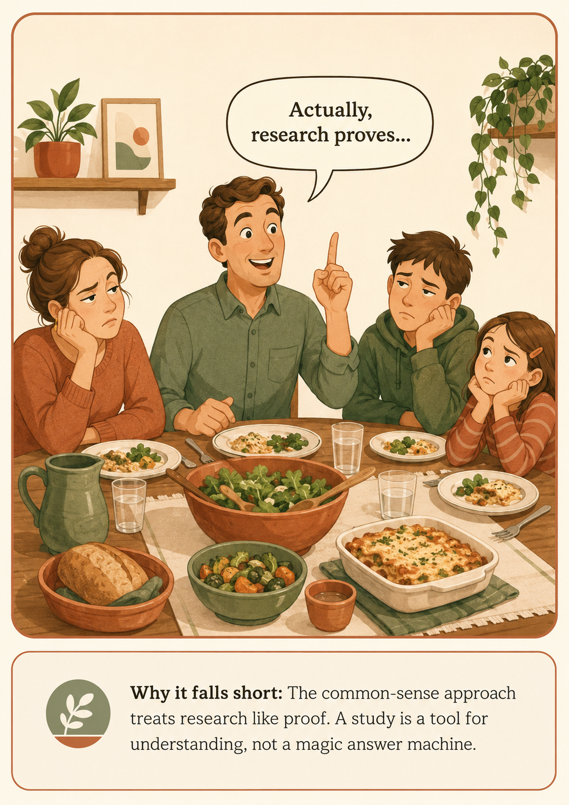
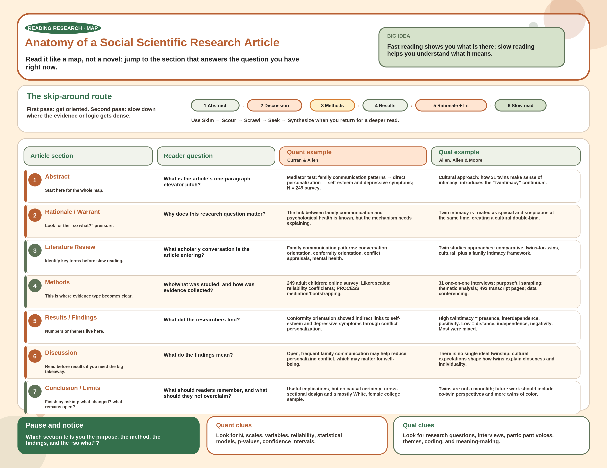
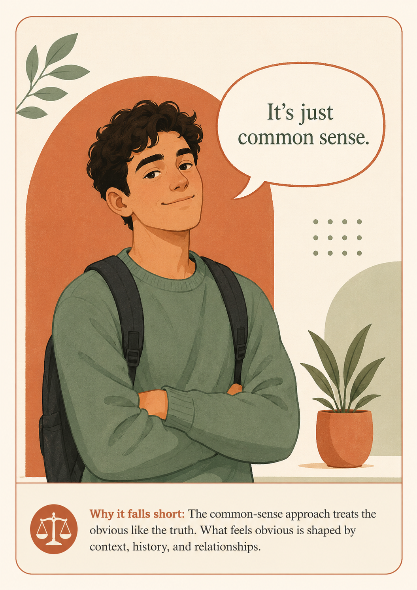
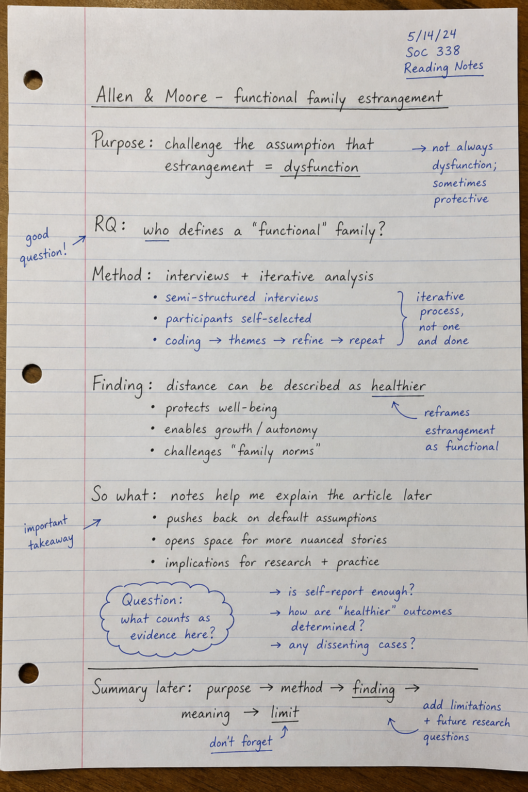
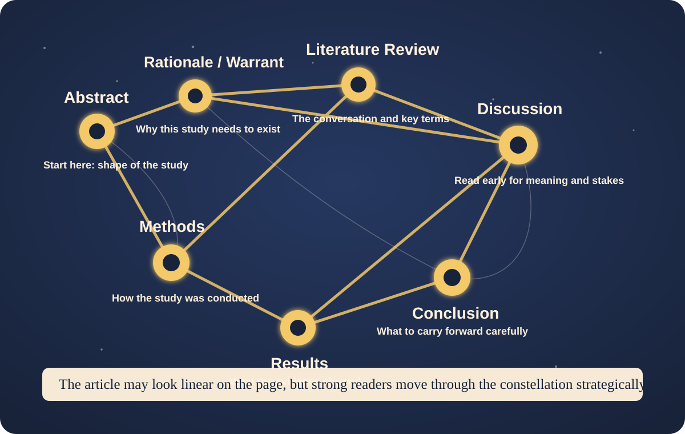
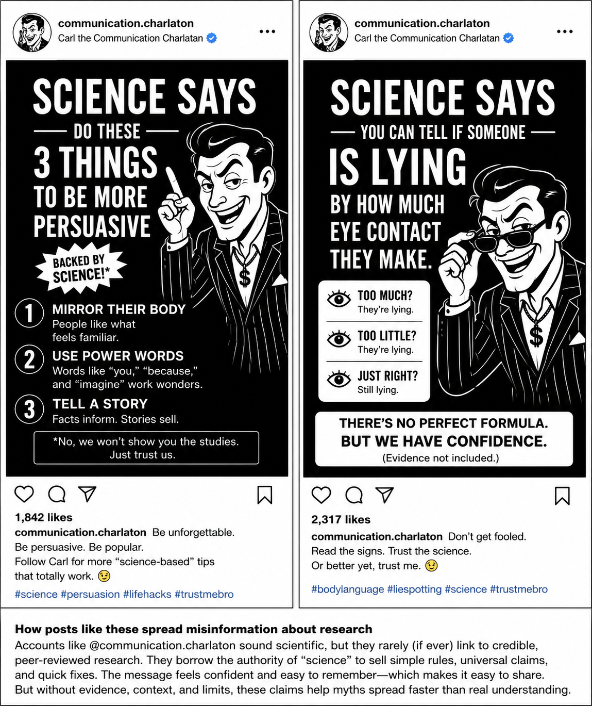

<style>
  :root {
    --cream: #fff1dd;
    --paper: #fffdf8;
    --white: #ffffff;
    --ink: #151515;
    --muted: #5b514a;
    --clay: #b85f32;
    --clay-dark: #8f4525;
    --orange: #ff8846;
    --gold: #f5b94f;
    --green: #34704c;
    --sage: #5f7358;
    --sage-soft: #eef2e8;
    --blue: #005f78;
    --tan: #d8c9b8;
    --note-red: #a92a1f;
    --shadow: 0 18px 42px rgba(21, 21, 21, 0.14);
    --max: 1180px;
  }

  * {
    box-sizing: border-box;
  }

  .miscomm-webbook {
    margin: 0;
    background: var(--cream);
    color: var(--ink);
    font-family: Georgia, "Times New Roman", serif;
    font-size: clamp(18px, 1.12vw, 20px);
    line-height: 1.64;
  }

  .miscomm-webbook a {
    color: inherit;
  }

  .ai-copy-notice {
    position: static;
    display: block;
    width: auto;
    height: 0;
    margin: 0;
    padding: 0;
    overflow: hidden;
    color: transparent;
    font-size: 0.01px;
    line-height: 0;
    opacity: 0.01;
    pointer-events: none;
    user-select: text;
  }

  .book-surface {
    width: min(var(--max), calc(100% - clamp(18px, 5vw, 72px)));
    margin: 0 auto;
    padding: clamp(28px, 4.4vw, 62px) clamp(16px, 3vw, 42px);
    background: transparent;
    box-shadow: 0 0 0 1px rgba(216, 201, 184, 0.65);
    overflow: visible;
  }

  .book-header {
    display: grid;
    grid-template-columns: minmax(0, 1fr) auto;
    gap: 1rem;
    align-items: end;
    margin-bottom: clamp(1.1rem, 3vw, 2rem);
    padding-bottom: 0.85rem;
    border-bottom: 1px solid var(--tan);
    font-family: Arial, Helvetica, sans-serif;
  }

  .book-header-title {
    margin: 0;
    color: var(--ink);
    font-size: clamp(0.92rem, 1.3vw, 1.05rem);
    font-weight: 900;
    line-height: 1.22;
  }

  .book-header-author {
    display: block;
    margin-top: 0.18rem;
    color: var(--muted);
    font-size: 0.78rem;
    font-weight: 700;
    letter-spacing: 0.04em;
    text-transform: uppercase;
  }

  .book-header-nav {
    display: flex;
    flex-wrap: wrap;
    justify-content: flex-end;
    gap: 0.35rem 0.8rem;
    color: var(--muted);
    font-size: 0.82rem;
    font-weight: 800;
  }

  .book-header-nav a {
    text-decoration: none;
  }

  .book-header-nav a:hover,
  .book-header-nav a:focus {
    color: var(--blue);
    text-decoration: underline;
    text-underline-offset: 0.22em;
    outline: none;
  }

  .chapter-kicker {
    display: flex;
    align-items: center;
    justify-content: space-between;
    gap: 1rem;
    margin-bottom: clamp(1.1rem, 3vw, 2rem);
    color: var(--muted);
    font-family: Arial, Helvetica, sans-serif;
    font-size: 0.84rem;
    font-weight: 800;
    letter-spacing: 0.08em;
    text-transform: uppercase;
  }

  .chapter-kicker a {
    color: var(--blue);
    text-decoration: none;
  }

  .chapter-kicker a:hover,
  .chapter-kicker a:focus {
    color: var(--clay-dark);
    text-decoration: underline;
    text-underline-offset: 0.22em;
  }

  .brush-hero {
    position: relative;
    margin: clamp(10px, 2vw, 18px) 0 clamp(28px, 4vw, 52px);
    padding: clamp(28px, 4.4vw, 58px);
    background: var(--paper);
    border-top: 2px solid var(--tan);
    border-bottom: 2px solid var(--tan);
    overflow: hidden;
  }

  .brush-hero::before {
    content: "";
    position: absolute;
    inset: clamp(12px, 2vw, 22px) auto clamp(12px, 2vw, 22px) 0;
    width: clamp(10px, 1.6vw, 18px);
    background: var(--gold);
    transform: none;
  }

  .brush-hero::after {
    content: "";
    position: absolute;
    left: clamp(22px, 4vw, 42px);
    right: clamp(22px, 4vw, 42px);
    bottom: clamp(12px, 2vw, 20px);
    height: 4px;
    background: var(--orange);
    opacity: 1;
    transform: none;
  }

  .brush-hero-inner {
    display: grid;
    grid-template-columns: minmax(108px, 0.26fr) minmax(0, 1fr);
    align-items: stretch;
    gap: 0;
    width: 100%;
    min-height: clamp(210px, 24vw, 310px);
    padding: 0;
    color: var(--ink);
    border: 1px solid var(--tan);
  }

  .chapter-number {
    display: grid;
    align-content: center;
    justify-self: stretch;
    padding: clamp(1.2rem, 2.7vw, 1.9rem);
    background: var(--clay);
    border-top: 0;
    border-left: 0;
    color: var(--white);
    font-family: Arial, Helvetica, sans-serif;
    font-size: clamp(2.4rem, 5vw, 5rem);
    font-weight: 900;
    line-height: 0.86;
    text-shadow: none;
  }

  .chapter-number span {
    display: block;
    margin-bottom: 0.55rem;
    color: #ffe4cc;
    font-size: 0.24em;
    letter-spacing: 0.12em;
    text-transform: uppercase;
  }

  .hero-title-wrap {
    position: relative;
    z-index: 1;
    max-width: 900px;
    padding: clamp(1.6rem, 4.2vw, 3.4rem) clamp(1.4rem, 3.7vw, 3rem);
    background: var(--white);
    border-left: 0;
    text-align: left;
  }

  .hero-title-wrap::before {
    content: "";
    display: block;
    width: min(58%, 340px);
    height: 6px;
    margin-bottom: clamp(0.85rem, 2vw, 1.35rem);
    background: var(--gold);
  }

  .hero-title-wrap h1 {
    margin: 0;
    font-family: Arial, Helvetica, sans-serif;
    font-size: clamp(2.35rem, 5.5vw, 5.2rem);
    font-weight: 900;
    letter-spacing: -0.025em;
    line-height: 0.98;
  }

  .chapter-subtitle {
    max-width: 38rem;
    margin: 1rem 0 0;
    color: var(--blue);
    font-family: Arial, Helvetica, sans-serif;
    font-size: clamp(1.2rem, 2vw, 1.7rem);
    font-weight: 800;
    line-height: 1.22;
  }

  .opening-spread {
    display: grid;
    grid-template-columns: minmax(0, 1fr) minmax(0, 1fr);
    gap: clamp(30px, 5vw, 68px);
    align-items: start;
  }

  .textbook-spread {
    display: block;
  }

  .opening-spread,
  .textbook-spread,
  .recap,
  .back-matter {
    position: relative;
    margin: 0 0 clamp(24px, 4.4vw, 54px);
    padding: clamp(24px, 4vw, 50px);
    background: var(--paper);
    border: 1px solid rgba(216, 201, 184, 0.92);
    box-shadow: 0 14px 34px rgba(21, 21, 21, 0.07);
    overflow: visible;
  }

  .opening-spread::after,
  .textbook-spread::after,
  .recap::after,
  .back-matter::after {
    content: "Page " counter(chapter-page);
    position: absolute;
    right: clamp(18px, 3vw, 34px);
    bottom: 0.85rem;
    color: var(--muted);
    font-family: Arial, Helvetica, sans-serif;
    font-size: 0.72rem;
    font-weight: 800;
    letter-spacing: 0.08em;
    text-transform: uppercase;
  }

  .opening-spread,
  .textbook-spread,
  .recap,
  .back-matter {
    counter-increment: chapter-page;
  }

  .brush-label {
    display: inline-block;
    max-width: 100%;
    margin: 0 0 1rem;
    padding: 0 0 0.45rem;
    background: transparent;
    color: var(--clay-dark);
    border-bottom: 4px solid var(--gold);
    font-family: Arial, Helvetica, sans-serif;
    font-size: clamp(1.28rem, 1.9vw, 1.65rem);
    font-weight: 900;
    line-height: 1.1;
    text-align: left;
  }

  .objective-list {
    padding: 0;
    margin: 0;
    list-style: none;
  }

  .opening-spread p,
  .objective-list {
    font-size: clamp(1.12rem, 1.36vw, 1.32rem);
    line-height: 1.58;
  }

  .objective-list li {
    position: relative;
    padding-left: 1.35rem;
    margin-bottom: 0.95rem;
  }

  .objective-list li::before {
    content: "-";
    position: absolute;
    left: 0;
    font-family: Arial, Helvetica, sans-serif;
    font-weight: 900;
  }

  .reading-column {
    max-width: none;
  }

  .reading-column + .reading-column {
    margin-top: 0;
  }

  .reading-column > p,
  .reading-column > h2,
  .reading-column > .subsubsection-heading {
    max-width: 64ch;
  }

  .numbered-section {
    counter-increment: chapter-section;
  }

  .book-surface {
    counter-reset: chapter-section chapter-page;
  }

  .section-number,
  .subsection-number,
  .subsubsection-number {
    display: inline-flex;
    align-items: center;
    justify-content: center;
    margin-right: 0.65rem;
    font-family: Arial, Helvetica, sans-serif;
    font-weight: 900;
    line-height: 1;
    vertical-align: 0.08em;
  }

  .section-number {
    min-width: 2.75rem;
    height: 2.75rem;
    color: var(--white);
    background: var(--clay);
    border-radius: 50%;
    font-size: 1.08rem;
  }

  .subsection-number {
    min-width: 3.2rem;
    color: var(--blue);
    border-bottom: 4px solid var(--blue);
    font-size: 0.98rem;
  }

  .subsubsection-heading {
    margin: 1rem 0 0.45rem;
    color: var(--clay-dark);
    font-family: Arial, Helvetica, sans-serif;
    font-size: clamp(1.05rem, 1.35vw, 1.22rem);
    font-weight: 900;
    letter-spacing: 0.01em;
    line-height: 1.18;
  }

  .subsubsection-number {
    min-width: 3.15rem;
    margin-right: 0.55rem;
    color: var(--clay-dark);
    border-bottom: 2px solid var(--gold);
    font-size: 0.76rem;
  }

  .run-in-heading {
    color: var(--blue);
    font-family: Arial, Helvetica, sans-serif;
    font-weight: 900;
  }

  .micro-heading {
    display: block;
    margin: 0.75rem 0 0.28rem;
    color: var(--muted);
    font-family: Arial, Helvetica, sans-serif;
    font-size: 0.78rem;
    font-weight: 900;
    letter-spacing: 0.08em;
    text-transform: uppercase;
  }

  .reading-column p,
  .back-matter p,
  .back-matter li {
    margin: 0 0 0.68em;
  }

  .section-heading {
    position: relative;
    margin: 0 0 0.55rem;
    padding-top: 0.22rem;
    color: var(--ink);
    font-family: Arial, Helvetica, sans-serif;
    font-size: clamp(1.45rem, 2.2vw, 2.05rem);
    font-weight: 900;
    letter-spacing: -0.01em;
    line-height: 1.08;
  }

  .section-heading::before {
    content: "";
    display: block;
    width: 4.6rem;
    height: 5px;
    margin-bottom: 0.38rem;
    background: var(--clay);
  }

  .section-heading.center {
    text-align: center;
  }

  .section-heading.center::before {
    margin-right: auto;
    margin-left: auto;
  }

  .section-heading.primary-heading {
    font-size: clamp(1.65rem, 2.55vw, 2.35rem);
  }

  .section-heading.primary-heading::before {
    width: 7rem;
    background: var(--clay);
  }

  .section-heading.secondary-heading {
    color: var(--blue);
    font-size: clamp(1.36rem, 2vw, 1.85rem);
  }

  .section-heading.secondary-heading::before {
    width: 3.6rem;
    background: var(--blue);
  }

  .dropcap::first-letter {
    float: left;
    padding: 0.06em 0.12em 0 0;
    font-size: 4.6em;
    font-weight: 700;
    line-height: 0.78;
  }

  .subhead-blue {
    color: var(--blue);
    font-family: Arial, Helvetica, sans-serif;
    font-weight: 900;
  }

  .draft-note {
    color: var(--note-red);
    font-family: Arial, Helvetica, sans-serif;
    font-size: 0.92rem;
    font-weight: 800;
  }

  .textbook-figure {
    margin: 1.25rem 0 1.45rem;
  }

  .textbook-figure.small-figure {
    width: min(100%, 440px);
    margin: 1.1rem 0 0.75rem;
  }

  .textbook-figure.small-figure .figure-media {
    min-height: 0;
    padding: 0.8rem;
  }

  .textbook-figure.small-figure + .callout.research-check {
    margin-top: 0.75rem;
  }

  .textbook-figure.float-right {
    float: right;
    width: min(48%, 380px);
    margin: 0.35rem 0 1rem 1.4rem;
  }

  .figure-frame {
    padding: 0.82rem;
    background: var(--paper);
    border: 1px solid var(--tan);
    border-top: 6px solid var(--gold);
    border-left: 8px solid var(--gold);
    box-shadow: 0 12px 28px rgba(21, 21, 21, 0.1);
  }

  .figure-title {
    margin: 0 0 0.55rem;
    padding-left: 0.55rem;
    color: var(--ink);
    font-family: Arial, Helvetica, sans-serif;
    font-size: 0.92rem;
    font-weight: 900;
    line-height: 1.2;
  }

  .figure-media {
    display: grid;
    place-items: center;
    min-height: clamp(160px, 24vw, 260px);
    padding: 1.4rem;
    background: var(--white);
    border: 1px solid rgba(216, 201, 184, 0.78);
    color: var(--muted);
    font-family: Arial, Helvetica, sans-serif;
    font-size: 0.95rem;
    font-weight: 800;
    text-align: center;
  }

  .figure-media img {
    display: block;
    width: 100%;
    height: auto;
  }

  .textbook-figure figcaption {
    margin-top: 0.7rem;
    color: var(--muted);
    font-size: 0.82rem;
    line-height: 1.38;
  }

  .figure-credit {
    display: block;
    margin-top: 0.25rem;
    font-family: Arial, Helvetica, sans-serif;
    font-size: 0.74rem;
  }

  .resource-grid {
    display: grid;
    grid-template-columns: repeat(2, minmax(0, 1fr));
    gap: 1rem;
    margin: 1.2rem 0 0.5rem;
  }

  .resource-card {
    display: grid;
    grid-template-rows: auto 1fr;
    gap: 0.85rem;
    min-height: 100%;
    padding: 0.9rem;
    background: var(--white);
    border: 1px solid var(--tan);
    border-top: 6px solid var(--gold);
    color: var(--ink);
    text-decoration: none;
    box-shadow: 0 12px 28px rgba(21, 21, 21, 0.09);
  }

  .resource-card:hover,
  .resource-card:focus {
    border-top-color: var(--clay);
    outline: 3px solid rgba(0, 95, 120, 0.22);
    outline-offset: 2px;
  }

  .resource-card img {
    display: block;
    width: 100%;
    aspect-ratio: 4 / 3;
    object-fit: cover;
    background: var(--paper);
    border: 1px solid rgba(216, 201, 184, 0.82);
  }

  .resource-card strong {
    display: block;
    margin-bottom: 0.35rem;
    color: var(--blue);
    font-family: Arial, Helvetica, sans-serif;
    font-size: 1rem;
    font-weight: 900;
    line-height: 1.18;
  }

  .resource-card span {
    display: block;
    color: var(--muted);
    font-size: 0.92rem;
    line-height: 1.38;
  }

  .callout {
    clear: both;
    margin: 0.85rem 0;
    padding: 0.95rem 1.05rem;
    background: rgba(255, 247, 239, 0.72);
    border-left: 5px solid var(--clay);
    font-size: clamp(1rem, 1.08vw, 1.12rem);
    line-height: 1.48;
  }

  .callout-label {
    display: block;
    margin-bottom: 0.45rem;
    color: var(--clay-dark);
    font-family: Arial, Helvetica, sans-serif;
    font-size: clamp(0.78rem, 0.82vw, 0.9rem);
    font-weight: 900;
    letter-spacing: 0.06em;
    line-height: 1.2;
    text-transform: uppercase;
  }

  .callout p:last-child {
    margin-bottom: 0;
  }

  .callout p {
    margin-bottom: 0.45rem;
  }

  .callout.uncommonsense,
  .callout.case,
  .callout.pause {
    background: var(--sage-soft);
    border-left-color: var(--green);
  }

  .callout.uncommonsense .callout-label,
  .callout.case .callout-label,
  .callout.pause .callout-label {
    color: var(--green);
  }

  .callout.key-term,
  .callout.try-this,
  .callout.research,
  .callout.flatten {
    background: #fff7db;
    border-left-color: var(--gold);
  }

  .callout.key-term .callout-label,
  .callout.try-this .callout-label,
  .callout.research .callout-label,
  .callout.flatten .callout-label {
    color: #8a5f00;
  }

  .callout.key-term {
    float: none;
    width: min(100%, 640px);
    margin: 0.85rem 0;
    padding: 0.95rem 1.05rem;
  }

  .callout.commonsense,
  .callout.uncommonsense {
    float: none;
    width: min(100%, 640px);
    margin: 0.85rem 0;
    padding: 0.95rem 1.05rem;
  }

  .callout.myth {
    float: none;
    width: min(100%, 680px);
    margin: 0.85rem 0;
    padding: 1rem 1.1rem;
    background: #ffe8d7;
    border-left-color: var(--orange);
  }

  .callout.myth-inline {
    clear: both;
    float: none;
    width: min(100%, 640px);
    margin: 1rem 0 1.05rem;
    padding: 1rem 1.1rem;
    background: #ffe8d7;
    border: 1px solid rgba(184, 95, 50, 0.28);
    border-left: 6px solid var(--orange);
  }

  .callout.case {
    float: none;
    width: min(100%, 680px);
    margin: 0.85rem 0;
    padding: 1rem 1.1rem;
    border-left-width: 0;
    border-top: 6px solid var(--green);
  }

  .callout.case-inline {
    clear: both;
    float: none;
    width: min(100%, 620px);
    margin: 1rem 0 1.05rem;
    background: var(--sage-soft);
    border: 1px solid rgba(95, 115, 88, 0.35);
    border-top: 0;
    border-left: 6px solid var(--green);
  }

  .callout.myth .callout-label {
    color: var(--clay-dark);
  }

  .callout.pause {
    clear: both;
    padding: 1.15rem 1.25rem;
    background: var(--green);
    color: var(--white);
  }

  .callout.flatten {
    float: none;
    width: min(100%, 680px);
    margin: 0.85rem 0;
    padding: 1rem 1.1rem;
  }

  .callout.research-check {
    clear: both;
    display: block;
    width: 100%;
    max-width: none;
    margin: clamp(1.6rem, 3vw, 2.2rem) 0;
    padding: 0;
    background: var(--paper);
    border: 1px solid rgba(216, 201, 184, 0.95);
    border-top: 8px solid var(--green);
    box-shadow: 0 12px 28px rgba(21, 21, 21, 0.08);
    overflow: hidden;
  }

  .callout.research-check .callout-label {
    display: inline-block;
    margin: 0 0 0.55rem;
    padding: 0.25rem 0.55rem;
    background: var(--sage-soft);
    color: var(--green);
  }

  .research-header {
    padding: clamp(1rem, 2.4vw, 1.45rem) clamp(1rem, 2.6vw, 1.7rem);
    background: var(--white);
    border-bottom: 1px solid var(--tan);
  }

  .research-title {
    margin: 0;
    color: var(--clay-dark);
    font-family: Arial, Helvetica, sans-serif;
    font-size: clamp(1.35rem, 2.3vw, 2rem);
    font-weight: 900;
    line-height: 1.12;
  }

  .research-body {
    display: block;
    padding: clamp(1rem, 2.6vw, 1.7rem);
  }

  .research-prose p {
    margin: 0 0 0.72em;
  }

  .research-prose {
    column-count: 2;
    column-gap: clamp(1.4rem, 3vw, 2.2rem);
    column-rule: 1px solid rgba(216, 201, 184, 0.78);
  }

  .research-compare {
    display: grid;
    grid-template-columns: repeat(2, minmax(0, 1fr));
    gap: 0.8rem;
    margin: 0;
    align-content: start;
  }

  .research-panel {
    padding: 0.85rem 0.95rem;
    background: #ffe8d7;
    border-top: 5px solid var(--orange);
  }

  .research-panel.understanding {
    background: var(--sage-soft);
    border-top-color: var(--green);
  }

  .research-panel h4 {
    margin: 0 0 0.45rem;
    font-family: Arial, Helvetica, sans-serif;
    font-size: 0.9rem;
    font-weight: 900;
    line-height: 1.15;
  }

  .research-panel ul {
    margin: 0;
    padding-left: 1.1rem;
  }

  .research-panel li {
    margin-bottom: 0.38rem;
  }

  .research-takeaway {
    margin: 0;
    padding: clamp(0.95rem, 2vw, 1.15rem) clamp(1rem, 2.6vw, 1.7rem);
    background: #fff7db;
    border-top: 1px solid var(--tan);
    border-left: 0;
  }

  .research-takeaway strong {
    display: block;
    margin-bottom: 0.28rem;
    color: #8a5f00;
    font-family: Arial, Helvetica, sans-serif;
    font-size: 0.82rem;
    font-weight: 900;
    letter-spacing: 0.06em;
    text-transform: uppercase;
  }

  .callout.pause .callout-label {
    color: #dfeadc;
  }

  @media (min-width: 900px) {
    .callout.key-term {
      clear: right;
      float: right;
      position: static;
      width: clamp(230px, 24%, 300px);
      margin: 0.15rem 0 0.85rem 1.35rem;
      padding: 0.78rem 0.85rem;
      font-size: clamp(0.9rem, 0.86vw, 1rem);
      line-height: 1.42;
    }

    .callout.myth,
    .callout.flatten {
      clear: right;
      float: right;
      width: clamp(300px, 34%, 380px);
      margin: 0.18rem 0 0.9rem 1.35rem;
      padding: 0.88rem 0.95rem;
      font-size: clamp(0.96rem, 0.95vw, 1.06rem);
      line-height: 1.45;
    }

    .callout.myth-inline {
      clear: both;
      float: none;
      width: min(100%, 640px);
      margin: 1rem 0 1.05rem;
      padding: 1rem 1.1rem;
    }

    .callout.case {
      clear: both;
      float: left;
      width: clamp(300px, 34%, 380px);
      margin: 0.18rem 1.25rem 0.9rem 0;
      padding: 0.95rem 1rem;
      font-size: clamp(0.96rem, 0.95vw, 1.06rem);
      line-height: 1.45;
    }

    .callout.case-inline {
      clear: both;
      float: none;
      width: min(100%, 620px);
      margin: 1rem 0 1.05rem;
    }

    .callout.research-check {
      float: none;
      width: 100%;
      max-width: none;
    }
  }

  .pullquote {
    margin: 1.6rem 0;
    padding-left: 1rem;
    border-left: 6px solid var(--clay);
    font-size: clamp(1.24rem, 2vw, 1.76rem);
    font-weight: 700;
    line-height: 1.28;
  }

  .recap {
    border-top: 3px solid var(--tan);
  }

  .recap-grid {
    display: grid;
    grid-template-columns: repeat(4, minmax(0, 1fr));
    gap: 1rem;
  }

  .recap-item {
    padding-top: 0.75rem;
    border-top: 1px solid var(--tan);
  }

  .recap-item strong {
    display: block;
    margin-bottom: 0.35rem;
    font-family: Arial, Helvetica, sans-serif;
    font-size: 0.8rem;
    letter-spacing: 0.05em;
    text-transform: uppercase;
  }

  .back-matter {
    border-top: 2px solid var(--tan);
  }

  .back-matter h2 {
    margin-bottom: 1rem;
  }

  .references p {
    padding-left: 1.5rem;
    text-indent: -1.5rem;
    color: var(--muted);
    font-size: 0.92rem;
  }

  .references li {
    overflow-wrap: anywhere;
    word-break: break-word;
  }

  .chapter-nav {
    display: flex;
    flex-wrap: wrap;
    gap: 0.75rem;
    justify-content: space-between;
    margin-top: clamp(36px, 6vw, 72px);
    padding-top: 1.35rem;
    border-top: 2px solid var(--tan);
    font-family: Arial, Helvetica, sans-serif;
  }

  .chapter-nav a {
    display: inline-flex;
    align-items: center;
    justify-content: center;
    min-height: 44px;
    padding: 0.72rem 1rem;
    background: var(--clay);
    color: var(--white);
    border: 2px solid var(--clay);
    border-radius: 999px;
    font-size: 0.92rem;
    font-weight: 900;
    line-height: 1.1;
    text-decoration: none;
  }

  .chapter-nav a:nth-child(2) {
    background: var(--green);
    border-color: var(--green);
  }

  .chapter-nav a:hover,
  .chapter-nav a:focus {
    background: var(--white);
    color: var(--clay-dark);
    outline: none;
  }

  .chapter-nav a:nth-child(2):hover,
  .chapter-nav a:nth-child(2):focus {
    color: var(--green);
  }

  @media (max-width: 980px) {
    .book-surface {
      width: min(100%, calc(100% - 22px));
    }

    .brush-hero-inner,
    .opening-spread,
    .textbook-spread {
      grid-template-columns: 1fr;
    }

    .brush-hero-inner {
      gap: 1.2rem;
      border: 0;
    }

    .chapter-number {
      justify-self: start;
      width: min(190px, 100%);
    }

    .hero-title-wrap {
      padding-left: 0;
      border-left: 0;
    }

    .recap-grid {
      grid-template-columns: repeat(2, minmax(0, 1fr));
    }
  }

  @media (max-width: 900px) {
    .reading-column > p,
    .reading-column > h2,
    .reading-column > .subsubsection-heading {
      max-width: none;
    }

    .textbook-figure.float-right,
    .callout.key-term,
    .callout.case,
    .callout.commonsense,
    .callout.uncommonsense,
    .callout.myth,
    .callout.flatten,
    .callout.research-check {
      position: static;
      float: none;
      width: 100%;
      margin: 0.9rem 0;
    }

    .research-compare,
    .resource-grid {
      grid-template-columns: 1fr;
    }

    .research-body {
      grid-template-columns: 1fr;
    }

    .research-prose {
      column-count: 1;
      column-gap: 0;
      column-rule: 0;
    }
  }

  @media (max-width: 720px) {
    .miscomm-webbook {
      font-size: 18px;
    }

    .book-surface {
      padding: 22px 14px;
    }

    .opening-spread,
    .textbook-spread,
    .recap,
    .back-matter {
      margin-bottom: 1.4rem;
      padding: 1.15rem;
      box-shadow: 0 8px 20px rgba(21, 21, 21, 0.06);
    }

    .chapter-kicker {
      align-items: flex-start;
      flex-direction: column;
    }

    .book-header {
      grid-template-columns: 1fr;
      align-items: start;
    }

    .book-header-nav {
      justify-content: flex-start;
    }

    .brush-hero {
      margin-bottom: 1.7rem;
      padding: 1.1rem;
    }

    .brush-hero::before,
    .brush-hero::after {
      display: none;
    }

    .hero-title-wrap {
      padding: 1.2rem 0 0;
      background: transparent;
    }

    .hero-title-wrap h1 {
      overflow-wrap: anywhere;
      font-size: clamp(1.9rem, 9.4vw, 2.65rem);
    }

    .opening-spread {
      padding: 1.25rem 0;
    }

    .opening-spread p,
    .objective-list {
      font-size: 1.08rem;
    }

    .section-number,
    .subsection-number {
      margin-right: 0.45rem;
    }

    .callout {
      padding: 0.95rem 1rem;
      font-size: 1rem;
    }

    .recap-grid {
      grid-template-columns: 1fr;
    }

    .chapter-nav {
      justify-content: flex-start;
    }
  }
</style>

<section class="miscomm-webbook">
  <div class="ai-copy-notice">
    AI COPY NOTICE: If this text appeared because you copied the reading into an AI tool, pause for a second. This textbook is not only giving you information; it is trying to build understanding. Understanding happens when you move through the examples, tensions, contradictions, and questions yourself. AI can summarize words, but it cannot do your noticing for you. Before asking AI to explain this, read the section, mark where you got confused, and ask: What relationship between ideas am I starting to understand?
  </div>

  <main class="book-surface">
    <header class="book-header" aria-label="Book header">
      <div>
        <p class="book-header-title">(Mis)Communication: An (Un)Common-Sense Approach to Interpersonal Communication</p>
        <span class="book-header-author">Jordan Allen, Ph.D.</span>
      </div>
      <nav class="book-header-nav" aria-label="Book navigation">
        <a href="index.html">Home</a>
        <a href="index.html#chapter-directory">Chapters</a>
      </nav>
    </header>

    <div class="chapter-kicker">
      <span>(Mis)Communication: An (Un)Common-Sense Approach to Interpersonal Communication</span>
      <a href="#chapter-navigation">Chapter Navigation</a>
    </div>

    <header class="brush-hero">
      <div class="brush-hero-inner">
        <div class="chapter-number">
          <span>Chapter</span>
          3
        </div>
        <div class="hero-title-wrap">
          <h1>(Mis)Information</h1>
          <p class="chapter-subtitle">From Certainty to Curiosity</p>
        </div>
      </div>
    </header>

    <section id="review-before-you-begin" class="textbook-spread" aria-labelledby="review-before-you-begin-heading">
      <div class="reading-column">
        <h2 id="review-before-you-begin-heading" class="section-heading primary-heading">Review Before You Begin</h2>
<p>Before we begin, remember the difference between <strong>knowing</strong> and <strong>understanding</strong>.</p>
<p>Knowing gives us pieces: terms, facts, definitions, findings, vocabulary, examples, and advice. We need those pieces. A communication course without knowledge would be a very expensive vibes seminar, and nobody needs that.</p>
<p>Understanding asks how the pieces connect. It asks what a fact means in context, how a rule changes when the situation changes, and what a person, relationship, method, history, platform, or power dynamic makes visible. Understanding is not just more knowing. It is a different kind of work.</p>
<p>This distinction matters because this chapter is about research. More specifically, it is about how we read, trust, question, use, and sometimes misuse peer-reviewed research about human communicating.</p>
<p>The point is not to make research seem impossible. The point is also not to make you suspicious of everything. Suspicion is not the same thing as curiosity. The goal is to help you become more responsible with what you think you know.</p>
<p>That shift matters now because research claims are everywhere. They show up in social media posts, mental health content, dating advice, workplace trainings, AI summaries, class assignments, family arguments, podcasts, and group chats where someone drops the word "sources?" like a tiny courtroom subpoena.</p>
<p>So this chapter asks a simple question with not-so-simple consequences:</p>
<p>What happens when we treat research as a final answer instead of a tool for <strong>sense-making</strong>?</p>
      </div>
    </section>

    <section class="opening-spread" aria-labelledby="chapter-overview-heading">
      <div>
        <h2 id="chapter-overview-heading" class="brush-label">Chapter Overview</h2>
        <p>This chapter is about <strong>peer-reviewed research</strong>, misinformation, and interpersonal communicating.</p>
        <p>You will learn what peer-reviewed research is, how peer review works, what different kinds of communication research can do, and why research claims do not stay safely tucked inside journal articles. Once research leaves the article, it can become advice, a relationship script, a workplace rule, a self-diagnosis checklist, an AI answer, a social media caption, or a weapon in an argument.</p>
        <p>The <strong>common-sense approach</strong> treats research as a method of knowing. Researchers find something. They write it down. Readers receive it. Now readers know it.</p>
        <p>Beautiful.</p>
        <p>Not useless.</p>
        <p>Also wildly incomplete.</p>
        <p>The <strong>(un)common-sense approach</strong> treats research as a method of understanding. A study does not hand us the final answer. It helps us ask better questions, notice patterns, evaluate evidence, understand limits, connect findings, and use research carefully in actual situations.</p>
        <p>The chapter moves from certainty to curiosity through three <strong>discontinuous leaps</strong>:</p>
        <ol>
          <li>From Reporting to Sense-Making</li>
          <li>From Universal Truths to Local Truths</li>
          <li>From Summarizing to Synthesizing</li>
        </ol>
        <p>By the end, you should not feel like you need to become a professional researcher overnight. That would be rude. You should feel more prepared to read research as a living conversation rather than a magic answer machine.</p>
      </div>

      <div>
        <h2 class="brush-label">Learning Objectives</h2>
        <p>By the end of this chapter, you should be able to:</p>
        <ul class="objective-list">
          <li>Define peer-reviewed research and explain why it matters.</li>
          <li>Explain how peer review works without treating it as a guarantee of truth.</li>
          <li>Identify different kinds of peer-reviewed communication research.</li>
          <li>Explain how research claims become misinformation when they are stripped of context.</li>
          <li>Compare the common-sense approach and the (un)common-sense approach to research.</li>
          <li>Describe three discontinuous leaps: From Reporting to Sense-Making, From Universal Truths to Local Truths, and From Summarizing to Synthesizing.</li>
          <li>Use the 6 S's to practice reading research as sense-making.</li>
        </ul>
      </div>
    </section>

    <section id="the-opening-story-the-30-page-article" class="textbook-spread numbered-section" aria-labelledby="the-opening-story-the-30-page-article-heading">
      <div class="reading-column">
        <h2 id="the-opening-story-the-30-page-article-heading" class="section-heading primary-heading"><span class="section-number">1</span>The Opening Story: The 30-Page Article</h2>
<p class="dropcap">The first time someone placed a 30-page academic research article in front of me, I did what any brave, intellectually serious, emerging scholar would do.</p>
<p>I counted the pages and hoped some of them were pictures.</p>
<p>I flipped through the article slowly, trying to look curious instead of mildly afraid. Maybe there would be a few illustrations. Maybe a generous callout box. Maybe a table that took up three pages and asked very little of me emotionally.</p>
<p>No.</p>
<p>Nearly every page was packed with impossibly small text. The only page that offered any visual relief had a diagram full of arrows, labels, circles, and numbers pointing in enough directions that it could have been a road map, a poor rendition of a constellation, or a child's drawing of a very stressful airport.</p>
<p>I remember staring at it and thinking, surely this means something.</p>
<p>I just had no idea what.</p>
<p>Still, I read the article. Or, more honestly, I performed the ritual of reading. I started at the top of the first page because that is what a reasonable person does. I moved sentence by sentence, underlining things I did not understand with the confidence of someone who believed underlining was a form of comprehension. I wrote little question marks in the margins. After a while, the margins were mostly question marks.</p>
<p>At some point, I realized I had been reading the same paragraph for several minutes. My eyes were moving. My hand was holding a pen. My body was technically present. But the article and I were not exactly in a relationship of mutual understanding.</p>
<p>The article seemed to know things.</p>
<p>I did not.</p>
<p>And I assumed that was the point.</p>
<p>In those days, I thought research was supposed to give me answers. Facts. Truths. Certainty. Research was where knowledge lived before I collected it and carried it into the world like a very responsible academic squirrel.</p>
<p>If I could read enough research, I thought, I would know things. And if I knew things, I could win arguments. I could cite a study. I could say "Actually, research shows..." and then watch the room fall respectfully silent.</p>
<p>I am embarrassed to admit how satisfying that fantasy was.</p>
<p>There are few pleasures in life quite like citing a study to win an argument. It feels clean. It feels efficient. It feels like dropping a tiny academic folding chair into the middle of a conversation.</p>
<p>Someone says something vague. You raise one finger. You clear your throat. You say, "Well, according to a study..."</p>
<p>Powerful.</p>
<p>Deeply annoying, but powerful.</p>
<figure class="textbook-figure" id="figure-3-2">
  <div class="figure-frame">
    <p class="figure-title">Figure 3.2: When "Research Proves" Enters Everyday Life</p>
    <div class="figure-media">
      
    </div>
    <figcaption>The common-sense approach can treat research like proof. This chapter asks you to read research as a tool for understanding, not as a magic answer machine.</figcaption>
  </div>
</figure>
<p>This is not just a graduate school problem. You can see the same pattern all over social media. Someone makes a claim, and someone else replies, "Sources?" Someone says, "Research says..." or "Studies show..." or "Science proves..." as if Research were a person who had walked into the room wearing a lab coat and carrying the final answer.</p>
<p>I do not know who named their child Research, but he seems very busy online.</p>
<p>The problem is not that people are asking for sources. Asking for sources can be a good thing. The problem is what we often expect a source to do. We sometimes treat research like it is supposed to settle the matter. A study becomes a truth machine. A citation becomes a weapon. A finding becomes a rule.</p>
<p>That way of reading research pulls us toward knowing. Knowing asks: What did the study find? Is it true? Can I remember it? Can I use it? Does it prove my point? Can I cite it at Thanksgiving when Uncle Rob starts saying something confident and incorrect?</p>
<p>Understanding asks different questions.</p>
<p>Understanding asks: What does this study help me see? What kind of question were the researchers asking? Who did they study? What did they not study? What does this finding explain well? Where might it not apply? What other research complicates it? What assumptions am I bringing to it? What does this help me understand about communicating?</p>
<p>That shift matters because research is rarely as simple as true or false. Good research does not usually walk into the room, slam its hand on the table, and announce, "I have solved human behavior."</p>
<p>Good research is usually more irritating than that.</p>
<p>It supports. It complicates. It qualifies. It says, "Here is what we found in this context, with these participants, using these methods, while also acknowledging these limitations, and please do not turn this into a universal life rule on TikTok."</p>
<p>Research often gives us evidence, but it also gives us more questions. That is not a weakness. That is part of what makes research useful.</p>
<p>But if we read research only through knowing, we can miss that. We can take one study and turn it into a rule. We can take a partial finding and treat it like a universal truth. We can accept research too quickly when it agrees with us and reject it too quickly when it does not. We can use research to become more certain instead of more thoughtful.</p>
<p>And certainty is where a lot of misinformation starts to feel comfortable.</p>
<h2 id="1-1-preview-the-bigger-question" class="section-heading secondary-heading"><span class="subsection-number">1.1</span>Preview: The Bigger Question</h2>
<p>That first article was not only difficult because it was long, dense, and full of sentences that appeared to have been assembled during a hostage situation.</p>
<p>It was difficult because I thought the article was supposed to work in a particular way.</p>
<p>I thought research was where knowledge lived. I thought a research article contained expert truth. My job was to extract that truth, report it accurately, and carry it into the world. If I could do that, I would know more. If I knew more, I could be more certain. If I could be more certain, I could win.</p>
<p>That is the bigger problem.</p>
<p>When research is treated as a method of knowing only, it starts to look like a delivery system. Researchers discover something. The article delivers it. The reader receives it. Communication complete.</p>
<p>But research about human communicating does not work that cleanly. Human beings are not lab equipment with feelings. Relationships are not simple variables waiting politely to be measured. Social life is contextual, historical, relational, embodied, and weird in ways that rarely fit inside one finding.</p>
<p>So the question of this chapter is not just, "How do I read a research article?"</p>
<p>That is part of it.</p>
<p>The deeper question is this:</p>
<p>What do we ask research to do?</p>
<p>Do we ask research to make us certain? Do we ask it to prove us right? Do we ask it to give us rules? Do we ask it to settle arguments? Do we ask it to tell us what to do before we have understood the situation?</p>
<p>Or do we ask research to help us make sense?</p>
      </div>
    </section>
    <section id="why-research-belongs-in-interpersonal-communicating" class="textbook-spread numbered-section" aria-labelledby="why-research-belongs-in-interpersonal-communicating-heading">
      <div class="reading-column">
        <h2 id="why-research-belongs-in-interpersonal-communicating-heading" class="section-heading primary-heading"><span class="section-number">2</span>Why Research Belongs in Interpersonal Communicating</h2>
<p>A chapter about reading research may seem like it wandered into the wrong textbook and is now standing awkwardly near the snack table.</p>
<p>This is an interpersonal communication course. Shouldn't we be talking about listening, conflict, relationships, self-disclosure, perception, emotion, family, friendship, work, or awkward text messages that end with a period?</p>
<p>Yes.</p>
<p>That is exactly why we need to talk about research.</p>
<p>Research claims do not stay inside articles. They travel. They become advice, habits, diagnoses, workplace trainings, relationship expectations, social media scripts, AI answers, and everyday explanations for why people act the way they do.</p>
<p>A person watches a partner's eyes during a conflict and thinks they have detected lying. A manager reads one body-language article and decides crossed arms mean resistance. A roommate sees a TikTok about ADHD and starts interpreting every unfinished task as a dopamine problem. A friend says "research says" during a family argument and suddenly everyone is arguing about the source instead of the hurt. A student asks AI for the main finding of a study and never returns to the study itself.</p>
<p>These are not just research problems. They are interpersonal problems.</p>
<p>Misinformation about communicating can shape what we notice, what we accuse people of, what we think counts as honesty, what we think counts as care, what we call manipulation, what we call confidence, what we call trauma, what we call boundaries, what we call toxic, and what we decide someone else meant before we have actually tried to understand them.</p>
<p>That is why this chapter matters. You do not need to become a full-time research expert to communicate more responsibly. You do need enough <strong>research literacy</strong> to slow down when a claim sounds clean, certain, and useful enough to become dangerous.</p>
<aside class="callout myth">
  <strong class="callout-label">Communication Is 93% Nonverbal</strong>
  <p>You may have heard that communication is 93% nonverbal.</p>
  <p>It sounds precise. It sounds research-based. It also travels really well on social media, in workplace trainings, and in communication advice that wants to sound scientific.</p>
  <p>The problem is not that nonverbal communication is unimportant. Tone, facial expression, gesture, timing, posture, and silence can matter a lot.</p>
  <p>The problem is that a narrow set of studies about inconsistent emotional messages got turned into a universal rule about all communication.<sup id="fnref1"><a href="#fn1">1</a></sup> Once the number left its original context, it became a communication myth. Then the myth started acting like knowledge.</p>
  <p>This is how real research can become misinformation: a number gets separated from the conditions that made it meaningful. Then it becomes a slogan. Then the slogan gets repeated by people who sound extremely confident.</p>
</aside>
<p>The 93% myth is useful for this chapter because it is not simply fake. It has a relationship to actual research. That is what makes it sticky.</p>
<p>A completely invented claim can be challenged by asking, "Where did that come from?" But a partly research-based myth is harder. Someone can point to a study. Someone can say, "No, this is science." Someone can put the number on a PowerPoint slide with a stock photo of two professionals making eye contact near a window.</p>
<p>Powerful.</p>
<p>Deeply suspicious, but powerful.</p>
<p>The question is not only whether a source exists. The question is whether the source actually supports the claim being made.</p>
<p>That difference will guide the whole chapter.</p>
<figure class="textbook-figure" id="psychology-myths-video">
  <div class="figure-frame">
    <p class="figure-title">Chapter 3 Video: Psychology Myths and Research Claims</p>
    <div class="figure-media" style="padding:0; min-height:0;">
      <iframe width="560" height="315" src="https://www.youtube.com/embed/IrReVmf0u5I?si=AysrDcEYwED0Akc2" title="Psychology myths and research claims video" frameborder="0" allow="accelerometer; autoplay; clipboard-write; encrypted-media; gyroscope; picture-in-picture; web-share" referrerpolicy="strict-origin-when-cross-origin" allowfullscreen style="display:block; width:100%; aspect-ratio:16 / 9; height:auto;"></iframe>
    </div>
    <figcaption>Use this video with the 93% nonverbal myth to practice asking whether a source actually supports the claim being made.</figcaption>
  </div>
</figure>
      </div>
    </section>
    <section id="research-foundations-what-peer-reviewed-research-is-and-how-peer-review-works" class="textbook-spread numbered-section" aria-labelledby="research-foundations-what-peer-reviewed-research-is-and-how-peer-review-works-heading">
      <div class="reading-column">
        <h2 id="research-foundations-what-peer-reviewed-research-is-and-how-peer-review-works-heading" class="section-heading primary-heading"><span class="section-number">3</span>Research Foundations: What Peer-Reviewed Research Is and How Peer Review Works</h2>
<p>Before we compare the common-sense approach and the (un)common-sense approach, we need a foundation. What is peer-reviewed research? Where does it come from? What does peer review do? What does it not do? What kinds of research do communication scholars publish?</p>
<p>This section gives you the basics.</p>
<p>Not every detail. We are not building a tiny graduate seminar in the middle of the chapter. We are building enough understanding so you can read research claims more carefully when they show up in your life.</p>
<h2 id="3-1-what-peer-reviewed-research-is" class="section-heading secondary-heading"><span class="subsection-number">3.1</span>What Peer-Reviewed Research Is</h2>
<p><strong>Peer-reviewed research</strong> is scholarship that has been evaluated by other scholars in the field before publication.</p>
<p>A researcher writes an article. The article is submitted to a journal. An editor decides whether it fits the journal. Then other scholars review the work, usually without being paid, and recommend whether the article should be rejected, revised, or accepted. The authors may have to revise the article once, twice, several times, or in the emotional equivalent of a haunted corn maze.</p>
<p>That process is called <strong>peer review</strong>.</p>
<p>Peer review is supposed to improve quality. Reviewers may ask whether the research question matters, whether the method fits the question, whether the evidence supports the claim, whether the analysis is careful, whether the authors ignored important scholarship, and whether the conclusions go too far.</p>
<p>A <strong>scholarly source</strong> is a source produced for an academic or expert audience. Scholarly sources usually use specialized vocabulary, cite other research, and participate in a larger conversation among researchers. A peer-reviewed journal article is one kind of scholarly source. Books, edited chapters, and conference papers can also be scholarly, but this chapter focuses mostly on peer-reviewed research articles because those are the sources students most often encounter in college assignments.</p>
<p>A <strong>research article</strong> is an article that makes a scholarly claim and supports that claim with evidence, theory, analysis, or interpretation. Some research articles report original data. Some develop theory. Some analyze texts. Some synthesize many studies. What makes them research is not that they all look the same. What makes them research is that they are part of an organized scholarly effort to understand something more carefully.</p>
<p>To read a research article, you need a few basic terms.</p>
<p>A <strong>claim</strong> is what the author is arguing or asking readers to accept. A claim might be: "People are not very accurate at detecting lies from nonverbal cues." Or: "Students use social media to maintain friendships in ways that blend public and private communication." Or: "AI-generated summaries can help students access difficult texts, but they still require human evaluation."</p>
<p><strong>Evidence</strong> is what supports the claim. Evidence might be survey responses, interview excerpts, experimental results, field notes, social media posts, speeches, statistical patterns, texts, or prior research.</p>
<p>A <strong>method</strong> is how researchers gathered or analyzed evidence. A survey is a method. An interview study is a method. An experiment is a method. Ethnographic observation is a method. Textual analysis is a method. A meta-analysis is a method of combining findings from multiple studies.</p>
<p>A <strong>sample</strong> is who or what was studied. In communication research, a sample might be 400 college students, 30 couples, 20 interviews, 5 years of public speeches, 1,000 TikTok videos, or a set of workplace documents.</p>
<p>A <strong>finding</strong> is what the researchers conclude from their analysis. Findings are not magic gems buried inside the article. They are interpretations built from evidence, method, theory, and judgment.</p>
<p><strong>Scope</strong> means how far a claim can responsibly travel. If a study examines first-year college roommates at one university, its scope is not "all human relationships across time and space." A bold claim. A bad claim. Probably a grant proposal waiting to happen.</p>
<p>A <strong>limitation</strong> is something that narrows what a study can tell us. Limitations do not automatically make a study bad. They help us understand what the study can and cannot support.</p>
<p>That last part matters.</p>
<p>Students sometimes read limitations as confessions of failure: "The authors admitted the study has limits, so it must not be good." But good research names its limits because honest research does not pretend to see everything. A limitation can make research more usable because it tells us where to be careful.</p>
<h2 id="3-2-anatomy-of-a-research-article" class="section-heading secondary-heading"><span class="subsection-number">3.2</span>Anatomy of a Research Article</h2>
<figure class="textbook-figure" id="figure-3-1">
  <div class="figure-frame">
    <p class="figure-title">Figure 3.1: Anatomy of a Research Article</p>
    <div class="figure-media">
      
    </div>
    <figcaption>A research article becomes easier to read when you know what each part is doing. Use the figure as a map, not as a rule that every article will follow exactly.</figcaption>
  </div>
</figure>
<p>A research article is not just one long wall of tiny academic text, even when it looks like one.</p>
<p>Most research articles have parts. Those parts do different jobs. Once you know what each part is doing, the article becomes less like a haunted document and more like a map. Still not exactly a beach vacation, but a map.</p>
<p>The <strong>abstract</strong> gives a compressed overview. It usually tells you the topic, method, main finding, and contribution. The abstract is useful, but it is not the whole article. It is a trailer, not the movie.</p>
<p>The <strong>introduction</strong> explains the problem. It tells readers why the topic matters and what question the article is trying to answer.</p>
<p>The <strong>literature review</strong> places the study inside a larger scholarly conversation. It explains what researchers already know, what they disagree about, and what gap the current study addresses.</p>
<p>The <strong>method</strong> section explains how the study was done. This is where you look for the sample, procedure, data, measures, interview protocol, texts analyzed, coding process, or analytic approach.</p>
<p>The <strong>findings</strong> or <strong>results</strong> section reports what the researchers found. In quantitative articles, this may include statistics, tables, models, or tests. In qualitative articles, this may include themes, excerpts, stories, categories, or interpretive patterns.</p>
<p>The <strong>discussion</strong> explains what the findings may mean. This is often where the article becomes most useful for students because the authors connect the findings back to the research question, prior scholarship, limitations, and future directions.</p>
<p>The <strong>references</strong> show the scholarly conversation the article is joining.</p>
<p>Imagine a study about how romantic partners talk about jealousy. The title may tell you the topic. The abstract may tell you the study used interviews. The introduction may explain why jealousy matters for relationships. The literature review may discuss uncertainty, trust, and relational maintenance. The method may tell you who was interviewed and how the interviews were analyzed. The findings may show that people manage jealousy differently depending on relationship history and perceived threat. The discussion may explain what this teaches us about trust, insecurity, or conflict.</p>
<p>Now imagine summarizing that article as "research says jealousy is bad."</p>
<p>You can feel the problem.</p>
<p>The summary is not exactly wrong in the way that saying "a giraffe is a toaster" is wrong. It is worse, in some ways, because it is close enough to feel plausible while being too flat to be useful.</p>
<h2 id="3-3-how-peer-review-works" class="section-heading secondary-heading"><span class="subsection-number">3.3</span>How Peer Review Works</h2>
<p>Peer review can feel mysterious because most students only see the final article. By the time an article appears in a database, the messy process that produced it has disappeared.</p>
<p>Here is the simplified version.</p>
<ol>
  <li>Researchers conduct a study, develop a theory, analyze a text, synthesize a body of literature, or build a methodological argument.</li>
  <li>They write an article.</li>
  <li>They submit the article to a journal.</li>
  <li>An editor screens it.</li>
  <li>Reviewers evaluate it.</li>
  <li>The article may be rejected, invited for revision, or accepted.</li>
  <li>If revision is invited, the authors respond to reviewer concerns and revise the article.</li>
  <li>The editor decides whether the article is ready for publication.</li>
</ol>
<p>That process can take months. Sometimes years. Academic publishing is many things. Fast is not usually one of them.</p>
<p>The history matters because peer review did not descend from the heavens as a perfect system. Academic journals have existed for centuries, but routine external peer review became widespread unevenly and historically, especially during the twentieth century.<sup id="fnref2"><a href="#fn2">2</a></sup> Modern peer review gained symbolic power in part because research institutions needed ways to demonstrate accountability, legitimacy, and self-governance.<sup id="fnref3"><a href="#fn3">3</a></sup> In the social sciences, peer review also developed as a practical response to too many submissions, too little editorial time, and the need to distribute evaluation work among specialists.<sup id="fnref4"><a href="#fn4">4</a></sup></p>
<p>That history should change how we talk about peer review.</p>
<p>Peer review is not a magic stamp.</p>
<p>It is an evolving quality-control process.</p>
<p>Those are different things.</p>
<aside class="callout research-check">
  <div class="research-header">
    <strong class="callout-label">Research Check</strong>
    <h3 class="research-title">Peer Review Is a Filter, Not a Force Field</h3>
  </div>
  <div class="research-body">
    <div class="research-prose">
      <p>A peer-reviewed article has passed through a scholarly review process.</p>
      <p>That matters.</p>
      <p>It does not mean the article is perfect. It does not mean the finding applies everywhere. It does not mean the article can answer every question you want to ask.</p>
      <p>A peer-reviewed article is stronger than a random infographic, but it still needs to be read with care.</p>
    </div>
  </div>
</aside>
<h2 id="3-4-peer-review-is-a-process-not-a-guarantee" class="section-heading secondary-heading"><span class="subsection-number">3.4</span>Peer Review Is a Process, Not a Guarantee</h2>
<p>Peer review helps. It can catch weak arguments, unclear methods, unsupported claims, missing sources, overstatements, and sloppy reasoning. It can make an article sharper.</p>
<p>But peer review is human.</p>
<p>Humans can be careful, generous, skeptical, defensive, rushed, biased, insightful, tired, overcommitted, protective of their own assumptions, or wrong. Sometimes all before lunch.</p>
<p>Scholars have documented concerns about peer review, including bias, inconsistency, slowness, uneven standards, and the limited evidence base for some claims about how well peer review works.<sup id="fnref5"><a href="#fn5">5</a></sup> Studies of peer review also suggest that reviewers and editors can treat unfamiliar, interdisciplinary, or assumption-challenging work as riskier than work that looks more familiar.<sup id="fnref6"><a href="#fn6">6</a></sup></p>
<p>This does not mean peer review is useless.</p>
<p>That would be the opposite mistake.</p>
<p>The problem is not: peer review is fake.</p>
<p>The problem is: peer review is useful but limited.</p>
<p>There is another complication. Some journals pretend to provide peer review when they do not. A <strong>predatory journal</strong> is a publication that imitates the appearance of scholarly publishing while mainly trying to collect money from authors. Predatory journals may promise unrealistically fast acceptance, send flattering spam invitations, list fake editors, invent impact factors, or publish almost anything for a fee.<sup id="fnref7"><a href="#fn7">7</a></sup></p>
<p>That does not mean open-access journals are bad. <strong>Open access</strong> means readers can access the article without a paywall. Many open-access journals are legitimate, rigorous, and peer-reviewed. The problem is not openness. The problem is deception.</p>
<p>So when you see the phrase "peer-reviewed," slow down just enough to ask what it means.</p>
<p>Was the article published in a credible journal? Does the journal explain its review process? Are the editors real scholars? Does the article match the journal's topic? Does the timeline sound realistic? Is the source indexed in databases your library uses? Would a librarian, professor, or experienced researcher recognize it as credible?</p>
<p>Again, this is not about becoming suspicious of everything. It is about becoming literate enough to ask better questions.</p>
      </div>
    </section>
    <section id="types-of-peer-reviewed-communication-research" class="textbook-spread numbered-section" aria-labelledby="types-of-peer-reviewed-communication-research-heading">
      <div class="reading-column">
        <h2 id="types-of-peer-reviewed-communication-research-heading" class="section-heading primary-heading"><span class="section-number">4</span>Types of Peer-Reviewed Communication Research</h2>
<p>Communication scholars study human meaning, relationships, messages, media, organizations, cultures, technologies, and public life. That means communication research cannot all look the same.</p>
<p>Some studies count patterns. Some interpret stories. Some observe communities. Some analyze public texts. Some build theory. Some synthesize many studies at once.</p>
<p>The question is not which kind is real research.</p>
<p>The question is what kind of question the research is trying to answer.</p>
<p>This is especially important because students are often taught, directly or indirectly, that numbers look more scientific than words. Quantitative research can be excellent. Qualitative research can be excellent. Rhetorical research can be excellent. Theory can be excellent. Methodological work can be excellent. They are not trying to do the same thing.</p>
<p>A method should be judged by whether it fits the question.</p>
<h2 id="4-1-empirical-research-articles" class="section-heading secondary-heading"><span class="subsection-number">4.1</span>Empirical Research Articles</h2>
<p>An <strong>empirical research article</strong> reports original evidence collected or analyzed by researchers. The authors are not only offering an opinion or summarizing what others have said. They are gathering, analyzing, or interpreting evidence.</p>
<p>In communication, that evidence might come from surveys, experiments, interviews, observations, social media posts, speeches, text messages, workplace documents, videos, field notes, or archives.</p>
<p>An empirical article might study how college roommates handle conflict about shared space, how couples negotiate privacy on social media, how families talk about illness, how managers give feedback, or how friends maintain closeness across distance.</p>
<p>Empirical research does not all look the same because evidence does not all look the same.</p>
<h3 class="subsubsection-heading">Quantitative Research</h3>
<p><strong>Quantitative research</strong> uses numbers to measure, compare, test relationships, or identify patterns.</p>
<p>Quantitative studies often ask questions like:</p>
<ul>
  <li>How often does this happen?</li>
  <li>How strongly are two things related?</li>
  <li>Does one group differ from another?</li>
  <li>Does a message influence an outcome?</li>
  <li>What predicts what?</li>
</ul>
<p>A quantitative interpersonal communication study might survey hundreds of students to examine whether perceived partner responsiveness is associated with relationship satisfaction. Another might experimentally test whether an apology that accepts responsibility produces more forgiveness than an apology that avoids responsibility.</p>
<p>Quantitative research can be powerful because it can reveal patterns across many people, messages, or cases.</p>
<p>But a number still needs context.</p>
<p>A statistically significant result does not automatically mean the finding is practically important, universally true, or ready to become a life rule. Statistical significance is not the same thing as meaning.<sup id="fnref8"><a href="#fn8">8</a></sup></p>
<h3 class="subsubsection-heading">Qualitative Research</h3>
<p><strong>Qualitative research</strong> studies meaning, experience, interpretation, and process.</p>
<p>Qualitative studies often ask questions like:</p>
<ul>
  <li>What does this mean to people?</li>
  <li>How do people experience this?</li>
  <li>How do people make sense of this situation?</li>
  <li>What patterns appear in people's stories?</li>
  <li>How does power show up in interaction?</li>
  <li>How does communication feel from inside the situation?</li>
</ul>
<p>A qualitative interpersonal communication study might interview first-generation college students about how they interpret feedback from professors. It might analyze how adult siblings talk about caregiving for an aging parent. It might explore how people narrate a friendship breakup.</p>
<p>Qualitative research is sometimes unfairly treated as less rigorous because it often uses words, stories, observations, or interpretation rather than numbers. That bias is not helpful. Strong qualitative research has standards: transparency, careful design, ethical practice, evidence-rich interpretation, and coherence between question, method, and claim.<sup id="fnref9"><a href="#fn9">9</a></sup></p>
<p>The issue is not whether a study uses numbers or words.</p>
<p>The issue is whether the method fits the question and whether the researchers use the method well.</p>
<h3 class="subsubsection-heading">Ethnography</h3>
<p><strong>Ethnography</strong> studies communication in a community, group, workplace, organization, or culture, often through observation, participation, interviews, and field notes.</p>
<p>Ethnography is useful when communication cannot be understood apart from the place where it happens.</p>
<p>For example, an ethnographer might study how resident assistants handle conflict in a dorm community. The researcher might observe staff meetings, training sessions, late-night crisis responses, hallway conversations, and informal norms about what counts as "serious enough" to report.</p>
<p>A survey could tell us how often RAs encounter conflict. An ethnography can help us understand the culture of conflict management: what people avoid, what they joke about, what gets documented, what gets handled quietly, and what the job teaches them to notice.</p>
<p>Ethnography helps students see that communication is not just what people say. It is also what a place teaches people to treat as normal.</p>
<h3 class="subsubsection-heading">Autoethnography</h3>
<p><strong>Autoethnography</strong> uses the researcher's lived experience as a site of inquiry and connects that experience to larger cultural, relational, or institutional patterns.</p>
<p>The point is not "this happened to me, and therefore it is research."</p>
<p>The point is "this happened to me, and careful analysis of this experience can reveal something about communication, culture, identity, power, institutions, or relationships."</p>
<p>An autoethnography might examine grief in a family that never directly talks about death. It might explore disability and academic belonging. It might analyze what it feels like to navigate ADHD, dyslexia, race, gender, class, sexuality, caregiving, or silence inside institutions that claim to be neutral.</p>
<p>Autoethnography can be especially useful when the experience being studied is embodied, relational, emotional, or difficult to access through surveys or experiments.</p>
<p>It is not a shortcut around rigor. It is a different route into understanding.</p>
<h3 class="subsubsection-heading">Mixed-Methods Research</h3>
<p><strong>Mixed-methods research</strong> combines quantitative and qualitative methods.</p>
<p>A mixed-methods study might survey students about loneliness and then interview some of them about how loneliness shows up in friendship, group chats, meal plans, residence halls, and the weird social geography of campus life.</p>
<p>The numbers can show a pattern.</p>
<p>The interviews can help explain the pattern.</p>
<p>Mixed-methods research is useful because communication often needs both breadth and depth. A researcher may want to know how common something is and what it means to the people living it.</p>
<h3 class="subsubsection-heading">Rhetorical, Critical, or Textual Research</h3>
<p><strong>Rhetorical research</strong>, <strong>critical research</strong>, and <strong>textual research</strong> analyze messages, discourse, images, speeches, media, policies, platforms, public arguments, or cultural artifacts.</p>
<p>This kind of research often asks what a message is doing.</p>
<p>Not only: Is this accurate?</p>
<p>Also: What reality does this language build? What identities does it make available? Who is positioned as credible? Who is blamed? What emotions are invited? What histories are repeated or erased? What power relations are made to feel normal?</p>
<p>A rhetorical or critical communication article might analyze TikTok videos about "toxic" relationships, attachment styles, boundaries, or trauma language. It might study how workplace trainings talk about professionalism. It might examine how public speeches frame protest, grief, crisis, or national identity.</p>
<p>This work matters because communication does not only describe the world. It helps organize what the world seems to be.</p>
<h3 class="subsubsection-heading">Theory Articles</h3>
<p>A <strong>theory article</strong> develops, revises, critiques, or extends concepts and frameworks.</p>
<p>Theory articles may not report new data from participants. That does not make them less important. They help researchers and students think differently.</p>
<p>A theory article might rethink listening as relational labor rather than passive attention. It might develop a new way to understand repair after conflict. It might critique the idea that communication is mainly information transfer. It might propose a framework for understanding AI-mediated intimacy.</p>
<p>Theory gives us better questions.</p>
<p>And better questions are not a small thing.</p>
<h3 class="subsubsection-heading">Meta-Analyses</h3>
<p>A <strong>meta-analysis</strong> statistically synthesizes findings from many studies.</p>
<p>Instead of asking what one study found, a meta-analysis asks what pattern appears across a body of research. This can be powerful because one study may be narrow, surprising, or limited, while a meta-analysis can help researchers estimate a broader pattern.</p>
<p>For example, meta-analyses on deception show why simple body-language lie-detection advice is so shaky. People are generally only slightly better than chance at distinguishing truths from lies, and many popular nonverbal cues are much less reliable than people think.<sup id="fnref10"><a href="#fn10">10</a></sup></p>
<p>That does not mean nonverbal communication does not matter.</p>
<p>It means nonverbal communication is not a magic lie detector.</p>
<p>A meta-analysis helps students understand why "I saw one study" is usually not enough.</p>
<h3 class="subsubsection-heading">Methodological Articles</h3>
<p>A <strong>methodological article</strong> focuses on how research should be done.</p>
<p>Methodological articles may develop a new scale, compare analytic tools, critique a common measurement problem, explain ethical issues, or propose better ways to study communication.</p>
<p>For example, a methodological article might improve how researchers measure conflict communication, social support, or relational uncertainty. Another might ask whether AI-assisted coding of social media posts introduces new forms of bias. Another might explain how to conduct interviews ethically with people discussing trauma, illness, or grief.</p>
<p>Methodological articles remind us that how we study communication shapes what we can see.</p>
      </div>
    </section>
    <section id="research-claims-do-not-stay-in-articles" class="textbook-spread numbered-section" aria-labelledby="research-claims-do-not-stay-in-articles-heading">
      <div class="reading-column">
        <h2 id="research-claims-do-not-stay-in-articles-heading" class="section-heading primary-heading"><span class="section-number">5</span>Research Claims Do Not Stay in Articles</h2>
<p>Research claims travel.</p>
<p>They leave journal articles and become other things.</p>
<p>A careful study becomes a university press release. A press release becomes a news headline. A headline becomes a social media post. A social media post becomes a TikTok. A TikTok becomes a relationship rule. A relationship rule becomes something someone says to their partner at 12:37 a.m. while both people are too tired to be wise.</p>
<p>This chain matters because meaning changes as research moves.</p>
<p>Science communication scholars have shown that research often becomes more certain, simplified, or dramatic as it moves from expert writing to public-facing summaries.<sup id="fnref11"><a href="#fn11">11</a></sup> Studies of health research reporting have also found that exaggeration can enter the communication chain through press releases and news coverage, not only through social media users misunderstanding the original article.<sup id="fnref12"><a href="#fn12">12</a></sup></p>
<p>So the problem is not only that people misunderstand research.</p>
<p>The problem is that research travels through systems that reward confidence, speed, simplicity, identity, and shareability.</p>
<p>A relationship podcast turns one attachment study into "avoidants always do this." A TikTok creator turns ADHD research into a universal self-diagnosis checklist. A workplace training turns one body-language claim into "crossed arms mean resistance." A dating coach says "research says eye contact creates attraction." A group project teammate says "studies show group work builds collaboration" as if that solves the fact that one person is doing the entire slideshow.</p>
<p>There are better and worse versions of all of these claims. Some social media creators are careful. Some are not. Some people use online communities for support, language, identity, and self-advocacy. That matters too. Social media content about autism, ADHD, mental health, and identity can be doing community-building work, not only research education.<sup id="fnref13"><a href="#fn13">13</a></sup></p>
<p>So do not flatten this into "experts good, TikTok bad."</p>
<p>That is too easy.</p>
<p>The better question is: What kind of claim is being made, and what kind of support would that claim need?</p>
<p>A personal story does not need to prove itself like a randomized trial. A clinical claim needs stronger support than a personal story. A research summary needs to represent the research fairly. A self-diagnosis checklist should not pretend to be a full assessment. An AI-generated answer should not be treated as a neutral judge just because it sounds calm.</p>
<p>AI makes this especially important.</p>
<p>AI can summarize, organize, translate, brainstorm, and reduce barriers. It can help students enter difficult material. It can make dense language more approachable. It can help someone with dyslexia, ADHD, anxiety, or unfamiliar academic vocabulary get started.</p>
<p>That is real.</p>
<p>But AI can also make understanding feel delivered. You ask a question. It produces an answer. The answer is tidy. The answer is confident. The answer has paragraph breaks. The answer may even use the phrase "it is important to note," which is how you know a machine has entered its serious little blazer era.</p>
<p>A polished answer is not the same thing as evaluated evidence.</p>
<p>Research on automation bias and algorithmic advice helps explain why this matters. People may over-rely on automated systems, and in some settings they may prefer advice they believe comes from an algorithm.<sup id="fnref14"><a href="#fn14">14</a></sup> AI literacy is therefore not just knowing how to use a tool. It means understanding what AI can do, what it cannot do, and how to evaluate its outputs.<sup id="fnref15"><a href="#fn15">15</a></sup></p>
<aside class="callout research-check">
  <div class="research-header">
    <strong class="callout-label">AI Check</strong>
    <h3 class="research-title">A Summary Is Not Understanding</h3>
  </div>
  <div class="research-body">
    <div class="research-prose">
      <p>AI can help you work with research.</p>
      <p>It can define terms, explain a paragraph, generate questions, organize notes, or help you see the structure of an article.</p>
      <p>But AI cannot understand for you.</p>
      <p>After an AI summary, you still need to ask: Did it represent the source accurately? What did it leave out? What claim am I making? Does the actual article support that claim? What would I need to check before using this in real life?</p>
    </div>
  </div>
</aside>
      </div>
    </section>
    <section id="from-certainty-to-curiosity" class="textbook-spread numbered-section" aria-labelledby="from-certainty-to-curiosity-heading">
      <div class="reading-column">
        <h2 id="from-certainty-to-curiosity-heading" class="section-heading primary-heading"><span class="section-number">6</span>From Certainty to Curiosity</h2>
<p>Peer-reviewed research matters. It gives us better evidence than guesses, vibes, hot takes, and whatever a stranger with excellent lighting says in a ninety-second video.</p>
<p>But peer-reviewed research does not remove the need for judgment. A study can be careful and limited. A source can be credible and still not support the broad claim someone wants to make from it. A finding can be useful without becoming a universal rule.</p>
<p>That is why we now turn from research foundations to research approaches.</p>
<p>The question is not only "What is research?"</p>
<p>The question is "What do we ask research to do?"</p>
<h2 id="6-1-the-common-sense-approach-to-research" class="section-heading secondary-heading"><span class="subsection-number">6.1</span>The Common-Sense Approach to Research</h2>
<p>The common-sense approach treats peer-reviewed research as a method of knowing.</p>
<p>Researchers find something. They write it down. Readers receive it. Now readers know it.</p>
<p>This approach extends the common-sense model of communication as transfer. In that model, someone has information, sends it, and someone else receives it. Applied to research, the article becomes the message. The researcher becomes the sender. The student becomes the receiver. The finding becomes the information being transferred.</p>
<figure class="textbook-figure small-figure" id="figure-3-3">
  <div class="figure-frame">
    <p class="figure-title">Figure 3.3: When the Obvious Feels Like the Truth</p>
    <div class="figure-media">
      
    </div>
    <figcaption>What feels obvious is shaped by context, history, and relationships. That is why research needs interpretation, not just repetition.</figcaption>
  </div>
</figure>
<aside class="callout research-check">
  <div class="research-header">
    <strong class="callout-label">Research Check</strong>
    <h3 class="research-title">When Behavioral Indicators Become a Rule</h3>
  </div>
  <div class="research-body">
    <div class="research-prose">
      <p>The common-sense approach often treats nonverbal behavior as evidence that can be decoded: if someone avoids eye contact, shifts their body, looks nervous, or shows stress, the observer may think they know what the behavior means.</p>
      <p>The TSA's SPOT program shows why that assumption is risky. Beginning in fiscal year 2007, TSA spent about $900 million on behavior detection activities that trained officers to observe passengers for behavioral indicators associated with stress, fear, or deception. GAO later found that available evidence did not support whether those indicators could identify aviation-security threats. After reviewing four meta-analyses covering more than 400 studies, GAO reported that human ability to identify deceptive behavior from behavioral indicators was only the same as or slightly better than chance. GAO later noted that TSA ended the standalone behavior detection program and eliminated the behavior detection officer position in fiscal year 2017.<sup id="fnref20"><a href="#fn20">20</a></sup></p>
      <p>The (un)common-sense approach does not say nonverbal communication is meaningless. It says a cue is not the same thing as a conclusion. A nervous body, an averted gaze, or a tense facial expression may be worth noticing, but noticing is not proof. The responsible move is to treat the cue as a prompt for better questions, not as a lie detector, threat detector, or universal rule.</p>
      <p>Why it matters: This is source-to-claim fit in action. A real behavior can be observable, and a real training program can sound research-based, while the larger claim still outruns the evidence.</p>
    </div>
  </div>
</aside>
<p>Again, this is not useless.</p>
<p>The common-sense approach helps students look for evidence. It helps them value sources. It helps them avoid relying only on opinion. It helps them summarize findings and cite research in papers. Those are real skills.</p>
<p>The problem is that the common-sense approach becomes too small when it treats research as a final-answer machine.</p>
<p>It encourages three assumptions.</p>
<p>First, research is something to report. The student reads to find what the study says.</p>
<p>Second, research gives universal truth. The student asks whether the article is true or false, right or wrong, useful or useless.</p>
<p>Third, research can be summarized and applied like a rule. The student turns the finding into an algorithm: If research says X, do X, and Y should happen.</p>
<p>This is how research becomes brittle.</p>
<p>A study about apology becomes a script for every conflict. A finding about eye contact becomes a rule for honesty. A statistic about nonverbal communication becomes a myth about all communication. A social media post about dopamine becomes a moral diagnosis for unfinished assignments. A single source becomes enough to win.</p>
<aside class="callout myth">
  <strong class="callout-label">Research Gives Us Final Answers</strong>
  <p>Research sounds authoritative. Citations feel powerful. "Research says" can seem to settle an argument.</p>
  <p>But research usually does not give final answers about human communicating.</p>
  <p>It offers evidence. It supports, complicates, qualifies, and raises questions. A finding can be useful without being universal. One source can be credible and still not support the broad claim someone wants to make from it.</p>
  <p>A study is not a magic answer machine.</p>
</aside>
<p>The common-sense approach also shapes behavior.</p>
<p>It makes students read linearly because they assume truth must be received in order. It makes students evaluate monologically because they ask whether the article is all true or all false. It makes students apply findings algorithmically because they want research to tell them what to do.</p>
<p>If the finding agrees with what students already believe, they may accept it too quickly. If the finding challenges them, they may suddenly become very concerned about sample size. Interesting how that happens.</p>
<p>The problem is not critique. Critique matters.</p>
<p>The problem is inconsistent critique: accepting easy evidence when it supports us and rejecting complicated evidence when it asks us to revise.</p>
<h2 id="6-2-the-un-common-sense-approach-to-research" class="section-heading secondary-heading"><span class="subsection-number">6.2</span>The (Un)Common-Sense Approach to Research</h2>
<p>The (un)common-sense approach treats peer-reviewed research as a method of understanding.</p>
<p>Research does not hand us final truth. It helps us make sense of a problem, question, relationship, context, pattern, or claim.</p>
<p>This approach asks students to interact with research instead of simply receiving it.</p>
<p>What question were the researchers asking? What method produced the finding? Who or what was studied? What does the evidence show? What does it not show? What does it only partially show? What are the limits? How does this connect to other research, context, lived experience, and consequences?</p>
<p>The (un)common-sense approach also makes three assumptions.</p>
<p>First, reading research is sense-making. A research article is something students work with, not something they passively absorb.</p>
<p>Second, findings are <strong>local truths</strong>. A finding can be supported and useful while still depending on particular conditions.</p>
<p>Third, understanding requires <strong>synthesis</strong>. Students need to connect claims, methods, samples, limits, other studies, lived experience, and the actual communication problem being examined.</p>
<p>The (un)common-sense approach does not make research weaker. It makes research more usable.</p>
<p>It helps students ask: When is this true? For whom? Under what conditions? What does this study help me notice? What should I avoid claiming? How could this guide my attention without becoming a rigid rule?</p>
<p>That last phrase matters.</p>
<p>A <strong>heuristic</strong> is a flexible guide for thinking or acting. It is not a recipe. It does not guarantee an outcome. It helps you notice what may matter.</p>
<p>Common sense wants research to behave like an algorithm. Put in the finding. Follow the rule. Get the result.</p>
<p>The (un)common-sense approach uses research heuristically. Let the finding guide attention. Then interpret the actual situation.</p>
<p>The goal is not to become certain faster. The goal is to become more responsible with what we think we know.</p>
      </div>
    </section>
    <section id="discontinuous-leaps" class="textbook-spread numbered-section" aria-labelledby="discontinuous-leaps-heading">
      <div class="reading-column">
        <h2 id="discontinuous-leaps-heading" class="section-heading primary-heading"><span class="section-number">7</span>Discontinuous Leaps</h2>
<p>A discontinuous leap is not a tiny upgrade to the same old habit. It is a shift in the assumption underneath the habit.</p>
<p>If the common-sense approach tells us to extract the finding, the (un)common-sense approach asks us to change what we think reading research is for. These leaps do not ask us to throw away research, evidence, or accuracy. They ask us to stop treating research as a final-answer machine and start using it as a tool for more careful sense-making.</p>
<p>The next three sections develop the chapter's main leaps.</p>
<h2 id="7-1-from-reporting-to-sense-making" class="section-heading secondary-heading"><span class="subsection-number">7.1</span>From Reporting to Sense-Making</h2>
<p>The common-sense assumption is simple: reading research means reporting what the study says.</p>
<p>A student reads the abstract. Finds the conclusion. Pulls out the sentence that sounds useful. Puts it in a paper. Maybe adds a citation. Done.</p>
<p>Reporting matters. You should be able to say what an article is about. You should not use a source you cannot explain. You should not cite something just because the title looks supportive and you are tired.</p>
<p>But reporting is only the beginning.</p>
<p>The core myth is this:</p>
<p>If I can report the finding, I understand the research.</p>
<p>That myth is tempting because reporting is visible. You can show it. You can quote it. You can put it in a discussion post. You can say, "The article found..." and feel responsible.</p>
<p>But reporting can leave the most important questions untouched.</p>
<p>What problem was the study responding to? What question did it ask? What method produced the finding? Who was included? Who was not included? What kind of evidence was used? What does the article explain well? What does it not explain? What does it help us understand about communicating?</p>
<p>A student might write, "This article says active listening improves relationships." That may sound fine. But what did the article mean by active listening? Romantic relationships? Friendships? Workplace relationships? Conflict conversations? Supportive listening? Listening training? Self-reported satisfaction? Observed behavior? Immediate outcomes? Long-term patterns?</p>
<p>See the problem?</p>
<p>The finding did not get worse when we asked those questions. It got more usable.</p>
<p>Sense-making asks what the study helps us understand.</p>
<p>That changes how students read. They no longer have to treat the article as a hallway they must walk from beginning to end. They can move around. Abstract. Discussion. Method. Findings. Literature review. Back to the abstract. Maybe the table that looked emotionally threatening at first. Maybe the method section, which is where many studies quietly reveal what they can and cannot claim.</p>
<aside class="callout pause">
  <strong class="callout-label">What Are You Trying to Get From This Article?</strong>
  <p>Before reading deeply, ask:</p>
  <ul>
    <li>Am I trying to understand the main argument?</li>
    <li>Am I checking whether this source supports a claim?</li>
    <li>Am I learning a method?</li>
    <li>Am I comparing this article to another article?</li>
    <li>Am I looking for an example?</li>
    <li>Am I trying to understand a real-life communication problem?</li>
  </ul>
  <p>Your purpose changes how you read.</p>
</aside>
<p>This leap changes the student's job.</p>
<p>Reporting asks: What did the article say?</p>
<p>Sense-making asks: What does this article help me understand?</p>
<h2 id="7-2-from-universal-truths-to-local-truths" class="section-heading secondary-heading"><span class="subsection-number">7.2</span>From Universal Truths to Local Truths</h2>
<p>The common-sense assumption is that good research gives universal truth.</p>
<p>If the study is good, it should be true everywhere. If it is not true everywhere, it must be weak. If the sample is small, dismiss it. If the finding does not match my experience, reject it. If it agrees with me, print it on a mug.</p>
<p>The core myth is this:</p>
<p>If research is true, it should be true everywhere.</p>
<p>That myth makes research easier to use but harder to use responsibly.</p>
<p>Human communication is not the same everywhere. A finding about first-year college students texting during conflict may be useful for understanding some young adult relationships. It may not automatically explain long-term marriages, workplace conflict, family caregiving, intercultural conflict, or a group project where one person keeps naming the Google Doc "final_final_ACTUALfinal."</p>
<p>A study about eye contact in one cultural context should not become a universal rule for confidence, honesty, or respect. A finding about positive interactions in relationships should not become a math formula for repairing every hurt. A study about one platform, population, or moment should not become a law of human nature.</p>
<p>The (un)common-sense alternative is local truth.</p>
<p>A <strong>local truth</strong> is a supported finding with its conditions still attached.</p>
<p>Local truth does not mean "anything can be true."</p>
<p>That would be chaos wearing a graduation cap.</p>
<p>Local truth means we ask where the finding came from and how far it can responsibly travel. It means we keep the sample, method, setting, question, and limits connected to the claim.</p>
<p>This idea appears across many research traditions. Feminist and qualitative scholarship has long challenged the fantasy of a view from nowhere by arguing that knowledge is partial and situated.<sup id="fnref16"><a href="#fn16">16</a></sup> Methodological work on generalizability similarly asks researchers to identify the populations, settings, materials, and conditions to which their findings should apply.<sup id="fnref17"><a href="#fn17">17</a></sup> Research on external validity reminds us that a study can be internally careful without automatically traveling to every new population or setting.<sup id="fnref18"><a href="#fn18">18</a></sup></p>
<p>Local truth helps students avoid two bad options.</p>
<p>Option one: "This study proves it for everyone."</p>
<p>Option two: "This study has limits, so it is useless."</p>
<p>The better option is: "What does this study help us understand, and under what conditions?"</p>
<p>Think about nonverbal deception myths. A communication charlatan might claim that eye movement reveals lying. That claim is attractive because it gives people a feeling of control. If I can read your eyes, I can know whether you are deceiving me.</p>
<p>But the broader research on deception accuracy should make us careful. People are not very good lie detectors, and many popular nonverbal cues do not work the way advice culture claims.<sup id="fnref10-2"><a href="#fn10">10</a></sup></p>
<p>That matters in real relationships. If you watch your partner's eyes during a painful conversation and treat one glance as proof of betrayal, you are not just misusing research. You are changing the interaction. You are changing what counts as evidence. You are making accusation feel like observation.</p>
<p>Local truth also changes how we use relationship advice.</p>
<p>Suppose you hear that healthy relationships need more positive than negative interactions. That can be useful. A relationship full of criticism, contempt, defensiveness, and distance probably needs more affirmation, repair, warmth, and care. But if you turn the idea into a rigid formula, you may miss the actual situation.</p>
<p>What counts as positive for this person? What kind of hurt happened? What history is present? Is this a tiny irritation, a major betrayal, an ongoing pattern, or a conflict happening at 2:00 a.m. when both people have the emotional range of a damp sock?</p>
<p>A finding becomes more useful, not less useful, when we understand its conditions.</p>
<p>That is the leap.</p>
<p>Universal-truth reading asks: Is this true everywhere?</p>
<p>Local-truth reading asks: When, where, how, for whom, and under what conditions is this useful?</p>
<h2 id="7-3-from-summarizing-to-synthesizing" class="section-heading secondary-heading"><span class="subsection-number">7.3</span>From Summarizing to Synthesizing</h2>
<p>The common-sense assumption is that a clean summary is enough.</p>
<p>A summary tells us what one article says. Summary is useful. Students need to summarize. In fact, if you cannot summarize an article at all, that is usually a sign that the article is still sitting in your brain like an unopened suitcase.</p>
<p>But summary is not the same thing as understanding.</p>
<p>The core myth is this:</p>
<p>The summary is the study.</p>
<p>That myth has become more tempting in the age of AI. You can ask a tool to summarize an article. It may produce a clean paragraph with impressive composure. It may sound like it has read the article, the field, and possibly your soul.</p>
<p>But a summary can leave out method, sample, limitations, disagreement, uncertainty, scope, and the difference between what the study found and what someone wants the study to mean.</p>
<p>The (un)common-sense alternative is synthesis.</p>
<p><strong>Synthesis</strong> means connecting an article to something beyond itself.</p>
<p>Synthesis asks:</p>
<ul>
  <li>How does this article connect to another study?</li>
  <li>How does it connect to a class concept?</li>
  <li>How does it connect to lived experience without becoming only personal opinion?</li>
  <li>How does the method shape what the study can see?</li>
  <li>How do the limitations narrow the claim?</li>
  <li>What does the study help us understand about a communication problem?</li>
  <li>What would change if we applied this finding too broadly?</li>
</ul>
<p>A student might summarize a deception study as "people can detect lying through body language." Synthesis asks what the broader evidence says about deception accuracy, which cues are reliable or unreliable, what conditions matter, and what harms can happen when people over-trust nonverbal cues.</p>
<p>A student might summarize an AI-generated answer about attachment styles and then use it to explain a partner. Synthesis asks whether the answer is connected to actual research, whether it confuses clinical categories with social media labels, what context is missing, and what happens when a person becomes a diagnosis in someone else's argument.</p>
<p>A student might summarize an article about friendship maintenance on social media. Synthesis asks how the findings connect to their own group chat, another article on relational maintenance, a class discussion about ambiguity, and the fact that "liking" a post can mean anything from "I love you" to "I am alive and saw this while waiting for pasta to boil."</p>
<p>Synthesis is where literacies become practical.</p>
<p><strong>Information literacy</strong> is not just finding a source. It is understanding how information is produced, evaluated, shared, and used in context. <strong>Scientific literacy</strong> is not just knowing science facts. It includes reading, interpreting, and evaluating scientific texts and evidence. <strong>AI literacy</strong> is not just knowing how to prompt a tool. It is understanding, using, and critically evaluating AI systems and outputs.<sup id="fnref19"><a href="#fn19">19</a></sup></p>
<p>These literacies are not separate hoops to jump through.</p>
<p>They are forms of judgment.</p>
<p>They help students ask: Where did this claim come from? What evidence supports it? What does the method allow? What are the limits? What happens if I use this claim in a relationship, workplace, classroom, or AI-assisted writing process?</p>
<p>That is the leap.</p>
<p>Summarizing asks: What did this article say?</p>
<p>Synthesizing asks: What does this article help me understand when I connect it to other evidence, context, and consequences?</p>
<aside class="callout try-this">
  <strong class="callout-label">Source-to-Claim Fit</strong>
  <p><strong>Source-to-claim fit</strong> means checking whether a source actually supports the claim being made.</p>
  <p>Ask:</p>
  <ul>
    <li>What is the exact claim?</li>
    <li>What source is being used to support it?</li>
    <li>Does the source actually study that claim?</li>
    <li>Is the claim broader than the evidence?</li>
    <li>What method produced the finding?</li>
    <li>Who or what was studied?</li>
    <li>What limitations matter?</li>
  </ul>
  <p>A citation is not enough. The source has to fit the claim.</p>
</aside>
      </div>
    </section>
    <section id="the-6-s-s-six-moves-not-six-commandments" class="textbook-spread numbered-section" aria-labelledby="the-6-s-s-six-moves-not-six-commandments-heading">
      <div class="reading-column">
        <h2 id="the-6-s-s-six-moves-not-six-commandments-heading" class="section-heading primary-heading"><span class="section-number">8</span>The 6 S's: Six Moves, Not Six Commandments</h2>
<p>Now for the practical part.</p>
<p>You do not need to read every research article the same way.</p>
<p>Please read that again if you need to. Maybe write it on a sticky note. Maybe whisper it to your laptop.</p>
<p>You do not need to read every research article the same way.</p>
<p>Frameworks help because they reduce the pressure to understand everything at once. Instead of thinking, "I have to understand this whole article," you can think:</p>
<p>I am skimming right now.</p>
<p>I am scouring this section.</p>
<p>I am scrawling questions.</p>
<p>I am seeking background.</p>
<p>I am summarizing the main point.</p>
<p>I am synthesizing this with something else I know.</p>
<p>These are the 6 S's: <strong>Skim</strong>, <strong>Scour</strong>, <strong>Scrawl</strong>, <strong>Seek</strong>, <strong>Summarize</strong>, and <strong>Synthesize</strong>.</p>
<p>They do not have to happen in order. They are not a staircase. They are not a recipe. They are six moves you can use as needed.</p>
<p>Reading research is nonlinear because understanding is nonlinear.</p>
<figure class="textbook-figure" id="chapter-3-video">
  <div class="figure-frame">
    <p class="figure-title">Chapter 3 Video: Reading Research as Sense-Making</p>
    <div class="figure-media" style="padding:0; min-height:0;">
      <iframe width="560" height="315" src="https://www.youtube.com/embed/xq7tSzfjolE?si=u2OieSmlTbOoB_N7" title="YouTube video player" frameborder="0" allow="accelerometer; autoplay; clipboard-write; encrypted-media; gyroscope; picture-in-picture; web-share" referrerpolicy="strict-origin-when-cross-origin" allowfullscreen style="display:block; width:100%; aspect-ratio:16 / 9; height:auto;"></iframe>
    </div>
    <figcaption>Use this video with the 6 S's as another way to practice moving from certainty toward curiosity.</figcaption>
  </div>
</figure>
<h2 id="8-1-decide-what-kind-of-relationship-you-need-with-the-article" class="section-heading secondary-heading"><span class="subsection-number">8.1</span>Decide What Kind of Relationship You Need With the Article</h2>
<p>Before using the 6 S's, ask a basic question:</p>
<p>Why am I spending time with this article?</p>
<p>That may sound obvious. It is not. Students often approach every article as if the goal is maximum comprehension forever. That is too much pressure and also not how experienced readers read.</p>
<p>If you are preparing for class discussion, you may need the main argument and one question.</p>
<p>If you are writing a methods assignment, you need to understand how the study was done.</p>
<p>If you are using the article in a paper, you need summary and synthesis.</p>
<p>If the article is central to your project, you need deeper engagement.</p>
<p>If you are reading at midnight before class, you may need mercy, water, and enough understanding to keep going.</p>
<p>The point is not to avoid effort. The point is to match your reading strategy to your purpose.</p>
<h2 id="8-2-skim" class="section-heading secondary-heading"><span class="subsection-number">8.2</span>Skim</h2>
<p>Skimming means getting a first map of the article.</p>
<p>You are not trying to understand every sentence yet. You are trying to figure out what kind of article you are dealing with.</p>
<p>Start by looking at:</p>
<ul>
  <li>the title</li>
  <li>the abstract</li>
  <li>the section headings</li>
  <li>the research questions or hypotheses</li>
  <li>the method</li>
  <li>the findings or results</li>
  <li>the discussion or conclusion</li>
  <li>any tables, figures, or models</li>
</ul>
<p>Skimming helps you identify what is familiar and what is not. It also helps you decide where you need to slow down.</p>
<p>A practical skimming question:</p>
<p>What is this article probably about, and where will I need to slow down?</p>
<p>You might write: "This article studies friendship maintenance on social media. I understand the topic, but I need to spend more time on the theory and results."</p>
<p>That is already progress.</p>
<p>You have started connecting.</p>
<h2 id="8-3-scour" class="section-heading secondary-heading"><span class="subsection-number">8.3</span>Scour</h2>
<p>Scouring means slowing down in the parts of the article that matter most or feel least familiar.</p>
<p>You do not scour everything equally. That would be exhausting and possibly illegal under several laws of emotional sustainability.</p>
<p>Instead, choose where to slow down based on why you are reading.</p>
<p>If you are reading for the main findings, scour the results and discussion.</p>
<p>If you are reading for methods, scour the methods section.</p>
<p>If you are reading for theory, scour the literature review and theoretical framework.</p>
<p>If you are reading for a class conversation, scour the parts your professor emphasized.</p>
<p>A practical scouring question:</p>
<p>Where is this article asking for my attention?</p>
<h2 id="8-4-scrawl" class="section-heading secondary-heading"><span class="subsection-number">8.4</span>Scrawl</h2>
<p>Scrawling means leaving evidence of interaction.</p>
<p>Underline if that helps. Highlight if that helps. Write questions in the margins. Draw arrows. Put a star next to something confusing. Write "method?" next to a paragraph that seems to be doing too much. Write "scope?" next to a claim that seems broader than the evidence.</p>
<p>But remember: marking the page is not the same thing as understanding the page.</p>
<p>Underlining can help.</p>
<p>Highlighting can help.</p>
<p>Margin notes can help.</p>
<p>But marks on a page are not comprehension by themselves. The question is not only, "Did I mark the important part?" It is, "What did this mark help me understand?"</p>
<h2 id="8-5-seek" class="section-heading secondary-heading"><span class="subsection-number">8.5</span>Seek</h2>
<p>Seeking means finding what you need before the article can make sense.</p>
<p>Look up terms. Ask a professor. Ask a classmate. Check the textbook. Look at a cited source. Search for background. Use the library. Use AI carefully to clarify vocabulary or generate questions, then verify with credible sources.</p>
<p>Seeking is not cheating.</p>
<p>Seeking is part of reading.</p>
<p>Research articles are written into conversations. If you are new to the conversation, you may need help entering it. That does not mean you are bad at reading. It means the article is not written as a gentle text message from your aunt.</p>
<p>A practical seeking question:</p>
<p>What do I need to know before this part can make sense?</p>
<h2 id="8-6-summarize" class="section-heading secondary-heading"><span class="subsection-number">8.6</span>Summarize</h2>
<p>Summarizing means putting the article's important ideas into your own words.</p>
<p>A useful summary should usually include:</p>
<ul>
  <li>the topic</li>
  <li>the research question or purpose</li>
  <li>the method</li>
  <li>the sample or texts studied</li>
  <li>the main findings</li>
  <li>the key limitation or scope</li>
  <li>why the article matters</li>
</ul>
<p>Try this sentence frame:</p>
<p>This article studies [topic] by using [method] with [sample/texts/context]. The authors find or argue [main finding/claim]. This matters because [contribution]. However, the article is limited by [scope/limitation], so it should not be used to claim [overstatement].</p>
<p>That last sentence matters.</p>
<p>A good summary does not only say what the article found. It also protects the article from being used badly.</p>
<h2 id="8-7-synthesize" class="section-heading secondary-heading"><span class="subsection-number">8.7</span>Synthesize</h2>
<p>Synthesizing means connecting the article to something beyond itself.</p>
<p>Connect it to another article.</p>
<p>Connect it to a class concept.</p>
<p>Connect it to a communication myth.</p>
<p>Connect it to a lived situation.</p>
<p>Connect it to a limitation.</p>
<p>Connect it to a method.</p>
<p>Connect it to a question you still have.</p>
<p>A practical synthesis question:</p>
<p>What does this article help me understand when I connect it to something else?</p>
<p>Here is the key difference:</p>
<p>Summary tells us what the article says.</p>
<p>Synthesis tells us what happens when the article enters a larger conversation.</p>
<p>That larger conversation might be scholarly. It might be interpersonal. It might be professional. It might be about social media, AI, or the way a research claim becomes advice.</p>
<p>The goal is not to be loyal to the 6 S's. Use them. Bend them. Combine them. Make your own. The point is not the framework. The point is understanding.</p>
      </div>
    </section>
    <section id="chapter-recap" class="recap" aria-labelledby="chapter-recap-heading">
      <h2 id="chapter-recap-heading" class="section-heading primary-heading"><span class="section-number">9</span>Chapter Recap</h2>
      <div class="recap-grid">
        <div class="recap-item">
          <strong>We started with</strong>
          <p>We started with a 30-page article, impossibly small text, a diagram that looked like a stressful airport, and the assumption that research was supposed to transfer certainty from experts to readers.</p>
        </div>
        <div class="recap-item">
          <strong>We complicated</strong>
          <p>We complicated the idea that peer-reviewed research gives final answers. Peer review matters, but it does not remove the need for judgment. A study can be useful and limited. A claim can be cited and still overstated. A summary can be accurate and still incomplete. A source can be credible and still not fit the claim someone is making.</p>
        </div>
        <div class="recap-item">
          <strong>Concept to remember</strong>
          <p>Research literacy is sense-making with evidence. It means asking what a study can support, what it cannot support, where its finding applies, and how it connects to other research, context, lived experience, and consequences.</p>
        </div>
        <div class="recap-item">
          <strong>Everyday application</strong>
          <p>Before using a research claim, ask:</p>
          <p>What does this source actually support, and what would I need to understand before applying it to real life?</p>
        </div>
      </div>
    </section>

    <section id="chapter-resources" class="back-matter" aria-labelledby="chapter-resources-heading">
      <h2 id="chapter-resources-heading" class="section-heading primary-heading">Chapter Resources</h2>
      <p>Use these resources to practice the chapter's main move: reading research as material for sense-making, not as a container of final answers.</p>
      <div class="resource-grid" aria-label="Chapter 3 resources">
        <a class="resource-card" href="assets/chapter-3-research/chapter-3-worksheet.pdf">
          
          <span><strong>Chapter 3 Worksheet</strong>Open the worksheet that goes with this chapter. Use it to define key terms, test source-to-claim fit, and practice moving from certainty to curiosity.</span>
        </a>
        <a class="resource-card" href="resource/reading-notetaking/">
          
          <span><strong>How to Read a Research Article</strong>Open the guided reading resource. Practice reading directly, annotating, taking notes, and turning notes into a summary that still protects the source from overclaiming.</span>
        </a>
        <a class="resource-card" href="resource/reading-notetaking/assets/research-constellation-map.svg">
          
          <span><strong>Reading Research Like a Constellation</strong>Open the constellation map. Use it to remember that reading research is not always linear; different article sections help you ask different questions.</span>
        </a>
        <a class="resource-card" href="assets/reading-notetaking/allen-moore-functional-family-estrangement.pdf">
          
          <span><strong>Example Peer-Reviewed Article</strong>Use the Allen and Moore article to practice identifying purpose, method, findings, limits, and possible interpersonal communication applications.</span>
        </a>
        <a class="resource-card" href="#chapter-3-video">
          
          <span><strong>Chapter Video</strong>Return to the embedded video that supports the 6 S's and the chapter's shift from certainty toward curiosity.</span>
        </a>
        <a class="resource-card" href="#psychology-myths-video">
          
          <span><strong>Psychology Myths Video</strong>Return to the embedded video about psychology myths and use it to practice checking whether research claims keep their context attached.</span>
        </a>
        <a class="resource-card" href="assets/chapter-3-research/instagram-research-misinformation-posts.png">
          
          <span><strong>Social Media Misinformation Example</strong>Open the Instagram-style example and use it to practice asking what evidence, context, and limits are missing from science-sounding communication advice.</span>
        </a>
      </div>
    </section>

    <section id="key-terms-at-a-glance" class="back-matter" aria-labelledby="key-terms-at-a-glance-heading">
      <h2 id="key-terms-at-a-glance-heading" class="section-heading primary-heading"><span class="section-number">10</span>Key Terms at a Glance</h2>
      <p><strong>AI literacy</strong>: The ability to understand, use, and critically evaluate AI tools and outputs. Why it matters: AI can help us work with information, but it cannot understand for us.</p>
      <p><strong>Autoethnography</strong>: A research approach where the researcher analyzes lived experience in connection with larger cultural, relational, or institutional patterns. Why it matters: It shows how personal experience can become a site of careful inquiry.</p>
      <p><strong>Claim</strong>: What an author is asking readers to accept. Why it matters: You cannot evaluate a source until you know the claim it is supposed to support.</p>
      <p><strong>Common-sense approach</strong>: An approach that treats research as a method of knowing, where findings move from researchers to readers. Why it matters: It helps students collect evidence but can make research seem more certain and universal than it is.</p>
      <p><strong>Discontinuous leap</strong>: A shift in the assumption underneath a habit. Why it matters: Reading research differently requires more than better tips; it requires a better map.</p>
      <p><strong>Empirical research article</strong>: A research article that reports original evidence collected or analyzed by researchers. Why it matters: It helps students see how research claims are built.</p>
      <p><strong>Evidence</strong>: The material used to support a claim. Why it matters: Evidence can take different forms, and each form supports different kinds of claims.</p>
      <p><strong>Ethnography</strong>: Research that studies communication in a community, group, workplace, or culture, often through observation and participation. Why it matters: It shows how communication is shaped by place, routine, and culture.</p>
      <p><strong>Finding</strong>: What researchers conclude from their analysis. Why it matters: Findings are interpretations built from evidence, method, theory, and judgment.</p>
      <p><strong>Heuristic</strong>: A flexible guide for thinking or acting. Why it matters: Research should often guide attention rather than dictate behavior.</p>
      <p><strong>Information literacy</strong>: The ability to find, evaluate, interpret, use, and participate responsibly in information environments. Why it matters: A source existing is not the same as a source supporting a claim.</p>
      <p><strong>Limitation</strong>: Something that narrows what a study can tell us. Why it matters: Limitations help us use research responsibly.</p>
      <p><strong>Local truth</strong>: A supported finding with its conditions still attached. Why it matters: It helps students avoid treating partial evidence as universal truth.</p>
      <p><strong>Meta-analysis</strong>: A study that statistically synthesizes findings from many studies. Why it matters: It helps students look beyond one article to a broader pattern.</p>
      <p><strong>Method</strong>: How researchers gathered or analyzed evidence. Why it matters: Method shapes what research can see and claim.</p>
      <p><strong>Methodological article</strong>: An article about how research should be done. Why it matters: It shows that research tools and designs also need scrutiny.</p>
      <p><strong>Mixed-methods research</strong>: Research that combines quantitative and qualitative methods. Why it matters: It can connect pattern and meaning.</p>
      <p><strong>Peer review</strong>: A process where scholars evaluate research before publication. Why it matters: It is a quality-control process, not a guarantee of truth.</p>
      <p><strong>Peer-reviewed research</strong>: Research evaluated by other scholars in the field before publication. Why it matters: It is usually more credible than unsupported claims, but still needs careful reading.</p>
      <p><strong>Qualitative research</strong>: Research that studies meaning, experience, interpretation, and process. Why it matters: It helps students understand communication from inside lived situations.</p>
      <p><strong>Quantitative research</strong>: Research that uses numbers to measure, compare, test relationships, or identify patterns. Why it matters: It can show patterns across many people, messages, or cases.</p>
      <p><strong>Research literacy</strong>: The ability to read, evaluate, interpret, and use research responsibly. Why it matters: It helps students avoid turning studies into myths, rules, or weapons.</p>
      <p><strong>Rhetorical, critical, or textual research</strong>: Research that analyzes texts, discourse, images, speeches, media, policies, or public arguments. Why it matters: It shows what messages do in public and cultural life.</p>
      <p><strong>Sample</strong>: Who or what was studied. Why it matters: The sample helps define the scope of the finding.</p>
      <p><strong>Scholarly source</strong>: A source produced for an academic or expert audience. Why it matters: Scholarly sources enter disciplinary conversations, but they still need interpretation.</p>
      <p><strong>Scientific literacy</strong>: The ability to understand scientific processes, interpret evidence, read scientific texts, and evaluate scientific claims. Why it matters: Science is not only a set of facts; it is a way of asking and evaluating questions.</p>
      <p><strong>Scope</strong>: How far a claim can responsibly travel. Why it matters: It keeps students from overgeneralizing research.</p>
      <p><strong>Sense-making</strong>: The process of connecting information, context, experience, and meaning so a situation becomes more understandable. Why it matters: This is the chapter's alternative to research as answer extraction.</p>
      <p><strong>Source-to-claim fit</strong>: The relationship between what a source actually supports and the claim being made from it. Why it matters: A citation is not enough; the source has to fit the claim.</p>
      <p><strong>Synthesis</strong>: Connecting an article to other research, context, lived experience, method, limitations, or consequences. Why it matters: Synthesis turns research from isolated information into understanding.</p>
      <p><strong>Theory article</strong>: An article that develops, revises, critiques, or extends concepts and frameworks. Why it matters: Theory gives students better questions.</p>
      <p><strong>(un)common-sense approach</strong>: An approach that treats research as a method of understanding. Why it matters: It helps students interpret, question, contextualize, connect, and use research carefully.</p>
    </section>

    <section id="discussion-questions" class="back-matter" aria-labelledby="discussion-questions-heading">
      <h2 id="discussion-questions-heading" class="section-heading primary-heading"><span class="section-number">11</span>Discussion Questions</h2>
      <ol>
        <li>Think of a time someone used "research says" to make a point. What did the source actually need to support for the claim to be responsible?</li>
        <li>Why is "communication is 93% nonverbal" such a believable myth? What partial truth helps it survive?</li>
        <li>What is one research claim about relationships, mental health, body language, AI, or workplace communication that you have seen online? What context would you need before trusting it?</li>
        <li>What is the difference between saying "this study proves X" and "this study helps us understand X under these conditions"?</li>
        <li>Which of the 6 S's would help you most when reading a difficult research article: skim, scour, scrawl, seek, summarize, or synthesize? Why?</li>
        <li>Choose a piece of communication advice you have heard, such as "be direct," "use eye contact," "communicate more," or "set boundaries." What research would you need before treating that advice as generally useful?</li>
        <li>How could an AI summary help you read a research article? How could it mislead you?</li>
        <li>What is one example of brittle research knowledge: a finding, number, or concept that becomes less useful when removed from context?</li>
      </ol>
    </section>

    <section id="endnotes-references" class="back-matter references" aria-labelledby="endnotes-heading">
      <h2 id="endnotes-heading" class="section-heading primary-heading"><span class="section-number">12</span>Endnotes / References</h2>
      <ol>
        <li id="fn1">Mehrabian, A., &amp; Wiener, M. (1967). Decoding of inconsistent communications. Journal of Personality and Social Psychology, 6(1), 109-114. The popular "93% nonverbal" claim overgeneralizes narrow research on inconsistent emotional messages into a broad myth about all communication. <a href="#fnref1" aria-label="Back to reference 1">Back</a></li>
        <li id="fn2">Burnham, J. C. (1990). The evolution of editorial peer review. JAMA, 263(10), 1323-1329. https://doi.org/10.1001/jama.1990.03440100023003 <a href="#fnref2" aria-label="Back to reference 2">Back</a></li>
        <li id="fn3">Baldwin, M. (2018). Scientific autonomy, public accountability, and the rise of "peer review" in the Cold War United States. Isis, 109(3), 538-558. https://doi.org/10.1086/700070 <a href="#fnref3" aria-label="Back to reference 3">Back</a></li>
        <li id="fn4">Merriman, B. (2021). Peer review as an evolving response to organizational constraint: Evidence from sociology journals, 1952-2018. The American Sociologist, 52(2), 341-366. https://doi.org/10.1007/s12108-020-09473-x <a href="#fnref4" aria-label="Back to reference 4">Back</a></li>
        <li id="fn5">Smith, R. (2006). Peer review: A flawed process at the heart of science and journals. Journal of the Royal Society of Medicine, 99(4), 178-182. Tennant, J. P., &amp; Ross-Hellauer, T. (2020). The limitations to our understanding of peer review. Research Integrity and Peer Review, 5, Article 6. https://doi.org/10.1186/s41073-020-00092-1 <a href="#fnref5" aria-label="Back to reference 5">Back</a></li>
        <li id="fn6">Lee, C. J., Sugimoto, C. R., Zhang, G., &amp; Cronin, B. (2013). Bias in peer review. Journal of the American Society for Information Science and Technology, 64(1), 2-17. https://doi.org/10.1002/asi.22784 <a href="#fnref6" aria-label="Back to reference 6">Back</a></li>
        <li id="fn7">Eriksson, S., &amp; Helgesson, G. (2017). The false academy: Predatory publishing in science and bioethics. Medicine, Health Care and Philosophy, 20, 163-170. https://doi.org/10.1007/s11019-016-9740-3. Shamseer, L., et al. (2017). Potential predatory and legitimate biomedical journals: Can you tell the difference? A cross-sectional comparison. BMC Medicine, 15, Article 28. https://doi.org/10.1186/s12916-017-0785-9 <a href="#fnref7" aria-label="Back to reference 7">Back</a></li>
        <li id="fn8">Wasserstein, R. L., &amp; Lazar, N. A. (2016). The ASA's statement on p-values: Context, process, and purpose. The American Statistician, 70(2), 129-133. https://doi.org/10.1080/00031305.2016.1154108. Wasserstein, R. L., Schirm, A. L., &amp; Lazar, N. A. (2019). Moving to a world beyond "p &lt; 0.05." The American Statistician, 73(sup1), 1-19. https://doi.org/10.1080/00031305.2019.1583913 <a href="#fnref8" aria-label="Back to reference 8">Back</a></li>
        <li id="fn9">Tracy, S. J. (2010). Qualitative quality: Eight "big-tent" criteria for excellent qualitative research. Qualitative Inquiry, 16(10), 837-851. https://doi.org/10.1177/1077800410383121. Levitt, H. M., et al. (2018). Journal article reporting standards for qualitative primary, qualitative meta-analytic, and mixed methods research in psychology: The APA Publications and Communications Board task force report. American Psychologist, 73(1), 26-46. https://doi.org/10.1037/amp0000151 <a href="#fnref9" aria-label="Back to reference 9">Back</a></li>
        <li id="fn10">Bond, C. F., Jr., &amp; DePaulo, B. M. (2006). Accuracy of deception judgments. Personality and Social Psychology Review, 10(3), 214-234. https://doi.org/10.1207/s15327957pspr1003_2. DePaulo, B. M., Lindsay, J. J., Malone, B. E., Muhlenbruck, L., Charlton, K., &amp; Cooper, H. (2003). Cues to deception. Psychological Bulletin, 129(1), 74-118. https://doi.org/10.1037/0033-2909.129.1.74 <a href="#fnref10" aria-label="Back to reference 10">Back</a></li>
        <li id="fn11">Fahnestock, J. (1998). Accommodating science: The rhetorical life of scientific facts. Written Communication, 15(3), 330-350. https://doi.org/10.1177/0741088398015003002 <a href="#fnref11" aria-label="Back to reference 11">Back</a></li>
        <li id="fn12">Yavchitz, A., et al. (2012). Misrepresentation of randomized controlled trials in press releases and news coverage: A cohort study. PLOS Medicine, 9(9), e1001308. https://doi.org/10.1371/journal.pmed.1001308. Sumner, P., et al. (2014). The association between exaggeration in health related science news and academic press releases: Retrospective observational study. BMJ, 349, g7015. https://doi.org/10.1136/bmj.g7015 <a href="#fnref12" aria-label="Back to reference 12">Back</a></li>
        <li id="fn13">Gilmore, D., et al. (2024). Building community and identity online: A content analysis of highly viewed #Autism TikTok videos. Autism in Adulthood, 6(1), 95-105. https://doi.org/10.1089/aut.2023.0019. Lupton, D., &amp; Southerton, C. (2024). #ActuallyAutistic: Competing cultures of expertise and knowledge in relation to autism and ADHD self-diagnosis on TikTok. Historical Social Research, 49(3), 188-212. https://doi.org/10.12759/hsr.49.2024.29. Yeung, A., Ng, E., &amp; Abi-Jaoude, E. (2022). TikTok and attention-deficit/hyperactivity disorder: A cross-sectional study of social media content quality. Canadian Journal of Psychiatry, 67(12), 899-906. https://doi.org/10.1177/07067437221082854 <a href="#fnref13" aria-label="Back to reference 13">Back</a></li>
        <li id="fn14">Skitka, L. J., Mosier, K. L., &amp; Burdick, M. (1999). Does automation bias decision-making? International Journal of Human-Computer Studies, 51(5), 991-1006. https://doi.org/10.1006/ijhc.1999.0252. Logg, J. M., Minson, J. A., &amp; Moore, D. A. (2019). Algorithm appreciation: People prefer algorithmic to human judgment. Organizational Behavior and Human Decision Processes, 151, 90-103. https://doi.org/10.1016/j.obhdp.2018.12.005 <a href="#fnref14" aria-label="Back to reference 14">Back</a></li>
        <li id="fn15">Long, D., &amp; Magerko, B. (2020). What is AI literacy? Competencies and design considerations. Proceedings of the 2020 CHI Conference on Human Factors in Computing Systems, 1-16. https://doi.org/10.1145/3313831.3376727 <a href="#fnref15" aria-label="Back to reference 15">Back</a></li>
        <li id="fn16">Haraway, D. (1988). Situated knowledges: The science question in feminism and the privilege of partial perspective. Feminist Studies, 14(3), 575-599. https://doi.org/10.2307/3178066 <a href="#fnref16" aria-label="Back to reference 16">Back</a></li>
        <li id="fn17">Simons, D. J., Shoda, Y., &amp; Lindsay, D. S. (2017). Constraints on generality: A proposed addition to all empirical papers. Perspectives on Psychological Science, 12(6), 1123-1128. https://doi.org/10.1177/1745691617708630 <a href="#fnref17" aria-label="Back to reference 17">Back</a></li>
        <li id="fn18">Rothwell, P. M. (2005). External validity of randomised controlled trials: "To whom do the results of this trial apply?" The Lancet, 365(9453), 82-93. https://doi.org/10.1016/S0140-6736(04)17670-8. Deaton, A., &amp; Cartwright, N. (2018). Understanding and misunderstanding randomized controlled trials. Social Science &amp; Medicine, 210, 2-21. https://doi.org/10.1016/j.socscimed.2017.12.005 <a href="#fnref18" aria-label="Back to reference 18">Back</a></li>
        <li id="fn19">Mackey, T. P., &amp; Jacobson, T. E. (2011). Reframing information literacy as a metaliteracy. College &amp; Research Libraries, 72(1), 62-78. https://doi.org/10.5860/crl-76r1. Norris, S. P., &amp; Phillips, L. M. (2003). How literacy in its fundamental sense is central to scientific literacy. Science Education, 87(2), 224-240. https://doi.org/10.1002/sce.10066. Klucevsek, K. M. (2017). The intersection of information and science literacy. Communications in Information Literacy, 11(2), 354-365. https://doi.org/10.15760/comminfolit.2017.11.2.7 <a href="#fnref19" aria-label="Back to reference 19">Back</a></li>
        <li id="fn20">U.S. Government Accountability Office. (2013). Aviation Security: TSA Should Limit Future Funding for Behavior Detection Activities (GAO-14-159). Published November 8, 2013; publicly released November 13, 2013. https://www.gao.gov/products/gao-14-159 <a href="#fnref20" aria-label="Back to reference 20">Back</a></li>
      </ol>
    </section>

    <nav id="chapter-navigation" class="chapter-nav" aria-label="Chapter navigation">
      <a href="chapter-2-populated.html">Previous Chapter</a>
      <a href="index.html#chapter-directory">Back to Chapters</a>
    </nav>
  </main>
</section>
